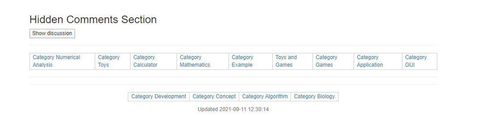

золото 02.06.2021. Как вы открыли для себя TCL/TK ???? >>
золотоПримерно в 1996 году персональный компьютер на моем столе был заменен рабочей станцией Sun Sparc 20. Я был инженером и в основном программировал на Фортране 77. Я изучил QuickBasic, Html, Perl (Unix), а также Javascript. Поскольку интерфейсом Sparc 20 был интерфейс командной строки Unix, я искал графический интерфейс или язык графического интерфейса в качестве интерфейса для рабочей станции Sparc 20. Я обнаружил, что язык управления инструментами TCL довольно прост: щелкните мышью и вызовите исполняемые значки на экране Xwindows. У меня даже на экране появился ветхий значок мусорной корзины. Я показал свою программу TCL для начинающих коллеге, и он сказал, что я довольно точно имитировал систему значков Windows на рабочей станции Sparc20. Но это было всего лишь около 200 строк TCL-кода для начинающих и быстро, как смазанная молния на Sparc20! Как тебе работа по продажам на TCL? Затем, Я написал небольшие калькуляторы слотов на TCL и Javascript на Sparc20 за брандмауэром, которые были похожи на мои последующие страницы в этой вики. Никогда не забывайте, что человеческий мозг эволюционировал для охоты на кроликов, а не на животных Unix и командные строки. Моделирование/картирование внешних стимуляторов вашими глазами и мозгом ближе к экрану с графическим интерфейсом, чем можно подумать.
Подходы калькулятора в интерфейсе консоли TCL для Windows10
золото 13 сентября 2021 г. Эти небольшие графические пользовательские интерфейсы TCL, представленные в вики для Windows10, могут показаться некоторым тривиальной математикой, но я отправил 4 или 5 заявок на TCLLIB для улучшения математической библиотеки TCLLIB. Например, насколько я могу судить, математические и логические функции IsOdd, IsEven, IsNegative, IsPositive, figurative_numbers, Twin_primes и Quadratic_Equation_Solution_for_reals не входили в библиотеку TCLLIB. Возможно, эти логические функции для целых чисел и квадратичные_уравнения для действительных чисел являются тривиальной математикой, но эти математические функции и квадратные уравнения встречаются в некоторых других математических языках, сторонних программах TCL и даже на страницах TCL WIKI. В ходе обсуждения с HEподразумевает, что основная идея TCL или другого компьютерного языка заключается в том, что другие пользователи могут совместно использовать более быстро скомпилированный код, а не самодельные функции. Я на пенсии, и поскольку у меня больше нет легкого доступа к машине UNIX, единственный способ — проверить процедуры TCL на ПК с Windows 10 с помощью ActiveState TCL.
Примечание: некоторые заявки закрыты, а функции доступны в TCLLIB.
- закрытый билет: найти интервал Лежандра и двух других предполагаемых простых чисел из двух записей (2019-04-24 19:02:32)
- закрытый билет: найдите интервал Лежандра и 2 других предполагаемых простых чисел из двух записей (2019-04-24 19:02:32)
- puts ::math::numtheory::differenceNumberPrimesLegendreModified 100 0
- закрытый билет: простые множители целого числа Создано: 03.02.2017, 18:12:23
- закрытый билет: запрос math::number.theory
- была бы полезна команда для простого факторинга положительного целого числа.2017-02-03
- может включать int, если число было плавающим, и возвращать ответ для int (n)
- код из tcl wiki ниже упорядочил числа от меньшего к большему, и это хорошо. 2017-02-03
- (Ожидает одобрения модератора) Добавьте Collatz_sequences и измененные Collatz_sequences в заявку E035b93f36
- Закрытый билет, функции Гаусса/Лежандра для количества простых чисел в Tcllib
- Запрос на Math::number_theory.
- Было бы удобно иметь 3 функции простых чисел, например Approx_number_primes = N1/Ln (N1),
- Legendre_primes2 = N1 / (Ln (N1)-1),modified_legendre_primes3 = N1 / (Ln (N1)-1,08366).
- (Ожидает одобрения модератора) Новый билет 5af6381a8b Решение квадратного уравнения, 2 действительных числа по методу Мюллера.
- Новый билет F8adb7a036 Фигурные числа и суммы степеней.
^ открытый билет, фигурные числа и суммы степеней
- f8adb7a036 2021-09-18 08:29:50 Открытие патча математических фигур чисел и сумм степеней
- Закрытый билет: функция пропуска простых чисел и наборы простых чисел-близнецов, простых чисел-близнецов, простых чисел-близнецов
- Первый процесс listPrimePairs возвращает список пар простых чисел, которые отличаются на заданное число, а второй процесс
- listPrimeProprofits возвращает список арифметических прогрессий простых чисел, отличающихся на заданное число.
- 0ce5a9fc98 2021-03-14 13:21:47 Патч закрыт по математике ::
- специальная функция пробела простых чисел и наборы простых чисел-близнецов, простых кузенов, простых чисел-близнецов
- df3676c982 14.03.2021 13:31:45 Патч закрыт
- математика :: уменьшение угла триггера геометрии в градусах или радианах
- 21fef042b9 14.03.2021 13:33:50 Патч закрыт
- математика :: геометрия добавить sind, cosd и т. д. к функциям геометрии
- Закрытый билет. По состоянию на июль 2018 года TCLLIB разработал код для углов триггера в градусах:
- инверсия триггера, гиперфункции в градусах и уменьшение угла в радианах и градусах.
- ::math::trig::radian_reduced угол
- ::math::trig::grade_reduced угол
- ::math::trig::sind угол
- ::math::trig::cosd угол
- ::math::trig::tand угол
- ::math::trig::cosecd угол
- ::math::trig::угол секунд
- ::math::trig::кот и угол
- Открыть 67b7bafb20 math::combined_market_rate 2019-03-02 05:07:49 math::combined_market_rate
- Открыто, Gamblers_Ruin_Expectation как вероятность в математике TCLLIB Создано: 19 сентября 2021 г., 13:34:34
- Открыто, билет TCLLIB 5af6381a8be0d5a87505d7e28203fe69fa2b3019 в очереди от 3 июля 2021 г.
- Открыть, Название: Решение квадратного уравнения, 2 действительных числа из метода Мюллера
- Но я полагаю, что эти функции будут полезны для предлагаемой библиотеки Collatz_sequences в Tcllib.
Предлагаемые Collatz_sequences и модифицированные функции Collatz_sequences в Tcllib.
collatz_sequence_head ( 27 , 4 ) evals 27 82 41 124 collatz_sequence_head ( 27 , 3 ) evals 27 82 41 collatz_sequence_head ( 27 , 2 ) evals 27 82 collatz_sequence_head ( 27 , 1 ) evals 27 , начальный запись Collatz_sequence_head ( 10 , 3 ) оценивает 5 16 8 collatz_sequence_tail ( 27 , 4 ) evals 8 4 2 1 collatz_sequence_tail ( 27 , 3 ) evals 4 2 1 collatz_sequence_tail ( 27 , 2 ) evals 2 1 collatz_sequence_tail ( 27 , 1 ) evals 1 , окончательная запись collatz _sequence_tail ( 10 , 3 )evals 4 2 1 collatz_sequence_tail ( 27 , 4 ) evals 8 4 2 1 collatz_sequence_max_sequence_value ( 27 ) evals 9232 ? collatz_sequence_max_sequence_value ( 10 ) evals 6 collatz_sequence_length ( 10 ) evals 6 collatz_sequence_length ( 27 ) evals 111 ? collatz_sequence_generate ( 10 )evals 5 16 8 4 2 1 collatz_sequence_generate ( 27 ) evals 27 82 41 124 62 31 ....
Проекты появляются, действия публикуются 1 декабря 2018 г.
золото 3 декабря 2018 г., страницы, которые, как я думал, исчезли, появляются, в основном в категории «Численный анализ».. как заметил s_, я не часто использовал символы подчеркивания в ранних заголовках. Мне нужно научиться лучше использовать поисковую систему. Спасибо. в любом случае у меня есть некоторые обновления. Я добавлю кнопку self_help. Обновленные программы TCL будут указаны как V2. Основная часть этих файлов хранится локально как файлы OpenOffice file.odt или текстовые файлы с расширенными полями file.rtf, в основном для проверки орфографии и сохраненных шрифтов большего размера для плохих глаз. Насколько я понимаю, резервные копии старых файлов доступны через Интернет-архив. Как и в случае с Википедией, я думаю, что автоматический дамп PDF отдельных страниц TCL/WIKI будет полезным элементом хранения, особенно если PDF-файл включает в себя стойку с торцевыми прикреплениями исходных текстовых данных unix/ascii для уникального WIKI. табличный формат и программы TCL. Я боюсь, что потеряю копию отформатированных таблиц, а у меня их куча.
золото 20 марта 2020 г., Послание ближневосточным лингвистам и кураторам музеев на глиняных табличках. Изготовил копии глиняных жетонов и опубликовал компьютерные программы, используя шумерские математические алгоритмы на глиняных табличках. Можете внести немного в ваш музей, если интересно???? Некоторые древние и исторические алгоритмы были загружены в библиотеку TCLLIB для языка управления инструментами (TCL).
Обновленные проекты под руководством Никита, сообщение о действиях от 1 декабря 2018 г.
- Collatz_Sequences (3*N+1) в демонстрационном примере консоли для TCL V2
- HOMA-IR аппроксимирует среднюю резистентность к инсулину в крови в демонстрационном примере консоли для TCL V2
- Калькулятор демо-примера моделирования роста снежинки Коха и TCL, численный анализ
- Моделирование планетарных расстояний с использованием закона Тициуса-Боде и демо-калькулятора TCL, численный анализ V2
- Временные фракталы в пропорциях золотого сечения и демо-пример TCL, калькулятор, численный анализ
- Текстовая приключенческая игра и демонстрационный пример TCL [ L1]
- Модель параметрического уравнения Калькулятор Vaporware TCL [ L2]
- Сборник программ One Liners и демонстрационные примеры TCL, расчеты, численный анализ [ L3]
- Basic_RS V2 в TCL как частичный интерпретатор языка Basic
- HgA1c аппроксимирует средний уровень глюкозы в крови в демонстрационном примере консоли для формата таблицы TCL V2 [ L4]
- Алгоритм процедуры вавилонского расширения и демонстрационный пример калькулятора, численный анализ [ L5]
- Биология >> Масса динозавров из Trackway и демо-пример калькулятора TCL, численный анализ
- Практические_советы_по_кавычкам_и_скобкам_в_TCL
- Калькулятор демонстрационного примера скорости биологических мутаций и TCL, численный анализ
- Babylonian_Brothers_Inheritance_Problems_Algorithm и демо-пример калькулятора TCL 8.6, численный анализ
- Карты, игра и вероятность Техасского холдем-покера, численный анализ
- Калькулятор демо-примера Ideal Rocket Performance и TCL, численный анализ
- Демонстрационный пример калькулятора старых вавилонских процентных ставок и eTCL [ L6]
- Демонстрационный пример калькулятора натяжения простых сил шкива и eTCL, численный анализ [ L7]
- Калькулятор корневых слов человеческого языка и лексикостатистический калькулятор и демонстрационный пример калькулятора слотов eTCL, численный анализ [ L8]
- Пример калькулятора слотов для уравнений случайного блуждания
- Демонстрационный пример калькулятора слотов FITS и eTCL частоты отказов электронных устройств [ L9]
- Калькулятор демонстрационного примера площади циклического четырехугольника Брахмагупты и eTCL
- Алгоритм процедуры умножения вавилонской четверти квадрата и демонстрационный пример калькулятора TCL 8.6, численный анализ
- Стратегия скачек генерала Тяньцзи из Китая и демо-пример eTCL, калькулятор, численный анализ
- Шумерская норма высева и демонстрационный пример калькулятора слотов eTCL, численный анализ [ L10]
- Пример калькулятора слотов точности круга Стоунхенджа [ L11]
- Демонстрационный пример прямоугольной радиоантенны и калькулятора слотов и т. д.
Проекты на старой вики
>>>>>> Если вы не можете найти или связать ссылку, посмотрите более старые файлы в категории «Численный анализ» <<<<<<<< >>>>>> по какой-то непонятной причине поисковая система вики не выводит эти файлы в начало <<<<<<<<
- Калькулятор массы шумерских керамических сосудов
- Алгоритм процедуры умножения вавилонской четверти квадрата и демонстрационный пример калькулятора TCL 8.6, численный анализ
- Задача вавилонского кубического уравнения и калькулятор демонстрационного примера eTCL, численный анализ
- Правило вавилонского квадрата для площади трапеции и демо-пример калькулятора eTCL, численный анализ
- Характеристические длины и между биофотонными датчиками в ультрафиолетовом спектре и калькулятором слотов TCL, численный анализ
- Пример слот-калькулятора стратографических лет, возраст Земли
- Триггерные процедуры для градусных мер, таких как sind, cosd, tand и т. д.
- Индийская математика Бхаскара (1) Формула синуса и ее расширения, история математики
- Алгоритм суммирования с компенсацией Кахана и алгоритм суммирования варианта Ноймайера, численный анализ
- Игровое королевство стратегии
- Вавилонский алгоритм заднего фронта и алгоритм обратной последовательности для обратных величин, калькулятор демонстрационного примера eTCL, численный анализ
- Вавилонский алгоритм комбинированной рабочей нормы и демонстрационный пример калькулятора слотов eTCL, численный анализ
- Взвешенное решение и пример демонстрационного калькулятора eTCL, численный анализ
- Деление на части с помощью нескольких соотношений и демонстрационный пример калькулятора eTCL, численный анализ
- Комбинированная доступность и пример демо-калькулятора eTCL, численный анализ
- Проблемы китайских скачек от Suanshu, DFP и пример демо-калькулятора eTCL, численный анализ
- Древнеегипетский алгоритм двойной ложной позиции и пример демо-калькулятора eTCL, численный анализ
- Вавилонский алгоритм умножения и пример демо-калькулятора eTCL, численный анализ
- Вавилонские задачи о весе и демо-пример калькулятора eTCL, численный анализ
- Вавилонский вавилонский алгоритм нерегулярной взаимной взаимности и калькулятор демо-примера eTCL, численный анализ
- Алгоритм процедуры расширения вавилонского поля и демонстрационный пример калькулятор eTCL, численный анализ
- Алгоритм деления вавилонской трапеции пополам и калькулятор демо-примера eTCL, численный анализ
- Вавилонский алгоритм ложной позиции и демо-пример калькулятора eTCL, численный анализ
- Вавилонский комбинированный рыночный курс и демо-пример калькулятора eTCL, численный анализ
- Задача вавилонского кубического уравнения и калькулятор демонстрационного примера eTCL, численный анализ
- Конвертация Sumerian Base 60 и демонстрационный пример калькулятора eTCL, численный анализ
- Арьябхат Сумма квадратов и кубов и демо-пример калькулятора eTCL, численный анализ
- Шумерский четырехугольник с приблизительной площадью и демонстрационный пример калькулятора слотов eTCL, численный анализ
- Калькулятор площади и объема поверхности и объема капсулы и демонстрационный пример eTCL
- Демонстрационный пример калькулятора вавилонских числовых серий и eTCL
- Калькулятор демонстрационного примера площади циклического четырехугольника Брахмагупты и eTCL
- Калькулятор приблизительного числа простых чисел по Гауссу и демонстрационный пример eTCL
- Старые вавилонские процентные ставки и демо-пример калькулятора eTCL
- Двухвыводная сложенная дипольная антенна и пример демо-калькулятора eTCL
- Холодильник_Пиньинь_Поэзия
- Случайная доска для стихов
- Пирог Oneliner в небе
- Маджонг_Стиль_Удаление
- Пример калькулятора линейной интерполяции
- Пример калькулятора слотов журнала оценки стоимости топлива
- 2010-08-17 19:03:29 Пример калькулятора слотов для поиска вавилонских триплетов
- 2010-08-17 15:24:36 Пример калькулятора слотов для оценки диаметра Земли Бируни
- 2010-08-16 15:20:57 Пример калькулятора слота журнала оценки стоимости топлива
- 2010-08-11 23:43:40 Пример калькулятора слотов стратографических лет, возраст Земли
- 2010-08-01 21:11:58 Пример калькулятора слотов биномиальной вероятности
- 2010-06-27 21:33:56 Slot_Calculator_Demo
- Демонстрация примера китайского предсказания судьбы
- 2010-08-16 20:04:34 Китайская точность Sun Stick для примера консоли
- 2010-08-01 01:15:15 Китайские гексаграммы Ичин на бронзе Чжоу: пример TCL
- 2010-07-29 01:12:32 Китайский Ичин Случайные прогнозы погоды
- 2010-07-18 01:53:25 Китайская шахматная доска Сянци
- Iching_Fortunes
- application_runner_&_wrapper
- Проверка нормальности числа Пи, пример консоли
- плоттер для гороскопа
- Пример калькулятора слота точности круга Стоунхенджа
- Процедура вызова, подобная примеру Фортрана
- Пример калькулятора слота точности круга Стоунхенджа
- Пример калькулятора игровых автоматов Drake Intelligent Life Equation
- Шумерские эквивалентные значения, соотношения и закон пропорций с калькулятором демо-примера
- Демонстрационный пример калькулятора сдельной прибыли и eTCL
- Пример калькулятора игровых автоматов Drake Intelligent Life Equation
- Пример калькулятора слота точности круга Стоунхенджа
- Пример калькулятора слота точности круга Стоунхенджа
- Вавилонская шестидесятеричная система счисления для математических вычислений на глиняных табличках в примере консоли
- Процедура вызова, подобная примеру Фортрана
- Пример движения объекта Canvas https://wiki.tcl-lang.org/26626
- Пример калькулятора игровых автоматов Drake Intelligent Life Equation
- Пример калькулятора слотов свойств эллипса
- Пример калькулятора высоты морского острова
- Подпись к фотоизображению в примере Pixane
- Время загрузки фотоизображения в Pixane
- Демонстрационный пример вероятности покера и калькулятора
- Пример перемещения объекта Canvas
- Пример пакета пространства имен универсального калькулятора
- Коэффициенты шумерского кругового сегмента и демонстрационный пример калькулятора
- Тоннаж древних шумерских кораблей и демонстрационный пример калькулятора слотов
- Демо-пример сжигания теплового двигателя и калькулятора
- Демонстрационный пример прямоугольной радиоантенны и калькулятора слотов и т. д.
- Шумерские эквивалентные значения, соотношения и закон пропорций с калькулятором демо-примера
- Шумерские темпы строительства и демонстрационный пример калькулятора слотов eTCL
- Демонстрационный пример калькулятора сдельной прибыли и eTCL
- Шумерские коэффициенты на гончарной фабрике и демонстрационный пример калькулятора
- Шумерские эквивалентные значения, соотношения и закон пропорций с калькулятором демо-примера
- Шумерские коэффициенты на ткацкой фабрике и демонстрационный пример калькулятора слотов eTCL
- Шумерские коэффициенты на битумном заводе и демонстрационный пример калькулятора слотов eTCL
- Шумерский объем скошенной чаши и демонстрационный пример калькулятора слотов eTCL
- Демонстрационный пример калькулятора слотов eTCL и плотности населения Шумера
- Вавилонская шестидесятеричная система счисления для математических вычислений на глиняных табличках в примере консоли
- Демонстрационный пример калькулятора Easy Eye и калькулятора слотов eTCL, численный анализ
- Демонстрационный пример калькулятора сдельной прибыли и eTCL
- Демонстрационный пример калькулятора слотов eTCL и рулонов бумаги и фетра
- Калькулятор корневых слов человеческого языка и лексикостатистический калькулятор и демонстрационный пример калькулятора слотов eTCL, численный анализ
- Шумерский калькулятор рабочего времени и счета и демонстрационный пример калькулятора слотов eTCL, численный анализ
- вклад в подсчет элементов в списке
- вклад в программу, которая учится
- вклад в демонстрацию Simple Canvas
- вклад в удаление
- добавил много фотографий на другие страницы
- добавлена картинка в «Более красивый маленький калькулятор»
- добавлено изображение к 3 треугольникам
- Шумерский калькулятор овец и стадных животных и демонстрационный пример калькулятора слотов eTCL, численный анализ
- Калькулятор экспоненциальной плотности вероятности и демонстрационный пример калькулятора слотов eTCL, численный анализ
- Демонстрационный пример калькулятора слотов FITS и eTCL частоты отказов электронных устройств
- Шумерские нормы высева и демонстрационный пример калькулятора слотов eTCL, численный анализ
- Формула оплаты Sumerian Porters и демонстрационный пример калькулятора слотов eTCL, численный анализ
- Одномерная модель теплового потока и демонстрационный пример калькулятора слотов eTCL, численный анализ
- Формула площади Sumerian Surveyor и демонстрационный пример калькулятора слотов eTCL, численный анализ
- Вавилонская шестидесятеричная система счисления для математических вычислений на глиняных табличках в примере консоли
- Пример калькулятора слотов биномиальной вероятности
- Процедура вызова, подобная примеру Фортрана
- Пример движения объекта холста
- Подпись к фотоизображению в примере Pixane
- Демонстрация примера китайского предсказания судьбы
- Китайские гексаграммы Ичин на бронзе Чжоу: пример TCL
- Китайская точность Sun Stick для примера консоли
- Калькулятор командной строки в примере пакета пространства имен
- Пример слот-калькулятора закона мощности кратера
- Пример калькулятора игровых автоматов Drake Intelligent Life Equation
- Пример калькулятора слотов свойств эллипса
- Оценка высоты горы с использованием углов обзора и т. д. Пример консоли
- Пример калькулятора линейной интерполяции
- Нахождение секущих углов Древнего Египта, пример консоли
- Пример калькулятора слотов журнала оценки стоимости топлива
- Пример пакета пространства имен универсального калькулятора
- Демо-пример сжигания теплового двигателя и калькулятора
- Демонстрационный пример калькулятора сдельной прибыли и eTCL
- Демонстрационный пример вероятности покера и калькулятора
- Пример калькулятора слотов для уравнений случайного блуждания
- Демонстрационный пример прямоугольной радиоантенны и калькулятора слотов и т. д.
- Обработка санскритских числовых слов в формулах и демонстрационном примере калькулятора
- Пример калькулятора высоты морского острова
- Пример калькулятора слота «Вавилонские тройки»
- Простой пример калькулятора слотов надежности
- Пример калькулятора слота точности круга Стоунхенджа
- Пример слот-калькулятора стратографических лет, возраст Земли
- Шумерские эквивалентные значения, соотношения и закон пропорций с калькулятором демо-примера
- Шумерский объем скошенной чаши и демонстрационный пример калькулятора слотов eTCL
- Коэффициенты шумерского кругового сегмента и демонстрационный пример калькулятора
- Шумерские коэффициенты на битумном заводе и демонстрационный пример калькулятора слотов eTCL
- Шумерские коэффициенты на ткацкой фабрике и демонстрационный пример калькулятора слотов eTCL
- Шумерские коэффициенты на гончарной фабрике и демонстрационный пример калькулятора
- Шумерские темпы строительства и демонстрационный пример калькулятора слотов eTCL
- Демонстрационный пример калькулятора слотов eTCL и плотности населения Шумера
- Проверка нормальности числа Пи, пример консоли
- Тоннаж древних шумерских кораблей и демонстрационный пример калькулятора слотов
- Калькулятор шумерской бронзы и сплавов с демонстрационными примерами Численный анализ eTCL
- Калькулятор плотности населения прямоугольного города и демонстрационный пример калькулятора слотов eTCL
- Демонстрационный пример Game Shell и eTCL Slot Calculator для старше 21 года, численный анализ
- Оптимальный размер лота заказа для продаж и демонстрационный пример калькулятора слотов eTCL
- Демонстрационный пример Game Shell и eTCL Slot Calculator для старше 21 года, численный анализ
- Оптимальный размер лота заказа для продаж и демонстрационный пример калькулятора слотов eTCL
- Запасные части из нормального распределения и демонстрационный пример калькулятора слотов eTCL, численный анализ
- Шумерские пивные ингредиенты и демонстрационный пример калькулятора слотов eTCL, численный анализ
- Шумерские коэффициенты у собаководов и демонстрационный пример калькулятора слотов eTCL, численный анализ
- Время загрузки фотоизображения в Pixane
- Демонстрационный пример длины и углов вавилонской тени и калькулятора слотов eTCL, численный анализ
- Формула площади Sumerian Surveyor и демонстрационный пример калькулятора слотов eTCL, численный анализ
тест ниже
Вавилонская шестидесятеричная система счисления для математических вычислений на глиняных табличках в примере консоли Пример калькулятора слотов биномиальной вероятности Пример калькулятора слотов для оценки диаметра Земли по Бируни Демонстрация примера китайского предсказания судьбы Китайская точность Sun Stick для примера консоли Калькулятор командной строки в примере пакета пространства имен Пример слот-калькулятора закона мощности кратера Пример калькулятора игровых автоматов Drake Intelligent Life Equation Демонстрационный пример калькулятора Easy Eye и калькулятора слотов eTCL , численный анализ Пример калькулятора слотов свойств эллипса Пример калькулятора слотов журнала оценки стоимости топлива Пример пакета пространства имен универсального калькулятора Демо-пример сжигания теплового двигателя и калькулятора Калькулятор корневых слов человеческого языка и лексикостатистический калькулятор и демонстрационный пример калькулятора слотов eTCL , численный анализ Маджонг_Стиль_Удаление Калькулятор длины молекул масла и калькулятор слотов eTCL Демонстрационный пример , численный анализ Пирог Oneliner в небеДемонстрационный пример калькулятора слотов eTCL и рулонов бумаги и фетра Демонстрационный пример калькулятора упаковки пенни и калькулятора слотов eTCL , численный анализ Демонстрационный пример калькулятора сдельной прибыли и eTCL Демонстрационный пример калькулятора массы планеты и калькулятора слотов eTCL , численный анализ Демонстрационный пример вероятности покера и калькулятора Пример калькулятора слотов для уравнений случайного блуждания Демонстрационный пример прямоугольной радиоантенны и калькулятора слотов и т. д. Обработка санскритских числовых слов в формулах и демонстрационном примере калькулятора Пример калькулятора высоты морского острова Пример калькулятора слота «Вавилонские тройки» Простой пример калькулятора слотов надежности Slot_Calculator_Demo Пример калькулятора слота точности круга Стоунхенджа Пример калькулятора слотов стратографических лет , возраст Земли Шумерские эквивалентные значения , соотношения и закон пропорций с калькулятором демо-примера Шумерский объем скошенной чаши и демонстрационный пример калькулятора слотов eTCL Коэффициенты шумерского кругового сегмента и демонстрационный пример калькулятора Шумерские коэффициенты на битумном заводе и демонстрационный пример калькулятора слотов eTCL Шумерские коэффициенты на ткацкой фабрике и демонстрационный пример калькулятора слотов eTCL Шумерские коэффициенты на гончарной фабрике и демонстрационный пример калькулятора Шумерские темпы строительства и демонстрационный пример калькулятора слотов eTCL Демонстрационный пример калькулятора слотов Sumerian Paint & Bitumen и eTCL Демонстрационный пример калькулятора слотов eTCL и плотности населения Шумера Тоннаж древних шумерских кораблей и демонстрационный пример калькулятора слотов
Проекты, которые будут обновлены
Калькулятор массы шумерских керамических сосудов , не найден в новой вики-системе. Правило вавилонского квадрата для площади трапеции и демо-пример калькулятора eTCL , численный анализ Индийская математика Бхаскара ( 1 ) Формула синуса и ее расширения , история математики Алгоритм суммирования с компенсацией Кахана и алгоритм суммирования варианта Ноймайера , численный анализ Шумерские счетные доски , стратегия размещения операций умножения и демонстрационный пример eTCL , численный анализ Вавилонский алгоритм комбинированной рабочей нормы и демонстрационный пример калькулятора слотов eTCL , численный анализ Пример калькулятора слота точности круга Стоунхенджа Пример калькулятора игровых автоматов Drake Intelligent Life Equation Шумерские эквивалентные значения , соотношения и закон пропорций с калькулятором демо-примера Демонстрационный пример калькулятора сдельной прибыли и eTCL Шумерский калькулятор овец и стадных животных и демонстрационный пример калькулятора слотов eTCL , численный анализ Демонстрационный пример калькулятора слотов FITS и eTCL частоты отказов электронных устройств Шумерские нормы высева и демонстрационный пример калькулятора слотов eTCL , численный анализ Калькулятор командной строки в примере пакета пространства имен Пример калькулятора линейной интерполяции Шумерские эквивалентные значения , соотношения и закон пропорций с калькулятором демо-примера Шумерский объем скошенной чаши и демонстрационный пример калькулятора слотов eTCL Калькулятор плотности населения прямоугольного города и демонстрационный пример калькулятора слотов eTCL Оптимальный размер лота заказа для продаж и демонстрационный пример калькулятора слотов eTCLДемонстрационный пример Game Shell и eTCL Slot Calculator для старше -21 , численный анализ Шумерские пивные ингредиенты и демонстрационный пример калькулятора слотов eTCL , численный анализ Демонстрационный пример калькулятора Easy Eye и калькулятора слотов eTCL , численный анализДемонстрационный пример калькулятора слотов eTCL и рулонов бумаги и фетра Калькулятор корневых слов человеческого языка и лексикостатистический калькулятор и демонстрационный пример калькулятора слотов eTCL , численный анализ Шумерский калькулятор рабочего времени и счета и демонстрационный пример калькулятора слотов eTCL , численный анализ Старые вавилонские процентные ставки и демо-пример калькулятора eTCLКалькулятор площади и объема поверхности и объема капсулы и демонстрационный пример eTCL Правило вавилонского квадрата для площади трапеции и демо-пример калькулятора eTCL , численный анализ Шумерские коэффициенты на ткацкой фабрике и демонстрационный пример калькулятора слотов eTCL Демонстрационный пример калькулятора слотов eTCL и плотности населения Шумера
Философия программ One Liners из сборника программ One Liners
Я помню, как моя сестра-подросток спросила о задаче по математике. Я подводил и тщательно объяснял то или иное утверждение алгебры. Но моя сестра говорила: «Мне просто нужен ответ!» В большинстве инженерных задач есть преимущество найти ответ в приближенном решении, скажем, с точностью до логарифмической линейки или с четырьмя значащими знаками. Например, используя старую логарифмическую линейку, можно было сделать предварительный расчет карандашом и приблизительный ответ, чтобы установить десятичную точку, прежде чем использовать точность логарифмической линейки до 4 значащих знаков. Если рассматривать TCL прежде всего как язык графического пользовательского интерфейса, то однострочные программы лучше всего использовать для проверки предварительных математических концепций. Однострочные программы и начальные консольные программы часто используются для проверки математических понятий и создания тестовых примеров перед загрузкой графической оболочки калькулятора.
При планировании любого программного обеспечения желательно собрать несколько тестовых примеров для проверки результатов работы программы с графическим интерфейсом пользователя. Результаты тестовых случаев оцениваются с помощью ручных вычислений, а затем проверяются в графическом калькуляторе TCL. Псевдокод и уравнения разработаны на основе ручных расчетов и теории. Однострочные процедуры и небольшие консольные программы пишутся для проверки альтернативных подпрограмм или процедур, а не для хранения некачественного кода и строк комментариев в главном калькуляторе графического интерфейса. Наконец, улучшенные или альтернативные подпрограммы загружаются в графический калькулятор. Графический интерфейс TCL или калькулятор слотов по сути представляет собой программу-оболочку для ввода записей, выполнения процедур вычислений, поддержки служебных процедур и отображения результатов. Дополнительные значащие цифры используются для проверки калькулятора TCL,
Переопубликованные советы от AMG , GWM и Wiki для программ One Liners
Процедура TCL для начинающих с константой круга pi была исправлена на proc pi {} {expr acos(-1)} ;# AMG . Однострочные программы должны избегать использования временных переменных, таких как {set temp 3.14:if {$temp=3.14} {return 1};return $temp}. Временные переменные могут привести к большей задержке во времени, усложнению и возможной путанице у читателя. Возвращаемое значение процедуры Tcl наследуется от возвращаемого значения последней команды, выполняемой в этой процедуре. Поэтому многие варианты использования команды возврата являются избыточными. Если кто-то настаивает на временных переменных, имейте в виду, что процедура и переменная могут иметь одно и то же имя. Можно было бы сказать « установить пи [пи] ». В целях безопасности и эффективности всегда проверяйтеприготовьтесь к выражениям ! Хех, я забыл заключить выражение в [пи], но это один из чрезвычайно редких случаев, когда это не имеет значения: ни пробелов, ни замен. Связывание делает две вещи: во-первых, когда все выражение представляет собой одно слово (один аргумент), его можно скомпилировать в байт-коде . Во-вторых, если замены выполняются только выражением , а не самим Tcl , атаки с внедрением предотвращаются. Поскольку команда expr имеет внутреннее условие if, ? в a?b:c так, попробуйте использовать внутренний if < ? > в выражении, а не в отдельном операторе IF . Для краткости избегайте использования отдельных операторов if и временных переменных. Аргументы _Переменная также является полезным инструментом в программах с одним вкладышем для ввода нескольких данных или списков слов. Другая стратегия — отслеживать возможные проверки ошибок и тестовые примеры для низких, средних и высоких значений в диапазоне работы программы oneliners. Первоначальную проверку деления на ноль или начала серии с единицы можно установить в выражение ? условный. Простой кредит для однострочной программы может использовать точку с запятой со знаком комментария <;#> в конце оператора, что не должно ухудшать выполнение программы. Использование функции времени в TCL даст еще больше информации об однострочных программах, см. также Время . В One liner Programs Pie in the Sky можно увидеть советы GWM.о важности синхронизации кода и процедур. Обычно вызов математических операций, библиотеки TCLLIB и других предварительно скомпилированных библиотек позволяет сэкономить в среднем 1/3 времени при работе с большими данными. Экономия времени не всегда очевидна при небольших объемах данных. Производительность однострочных программ может снизиться из-за длительных рекурсивных вызовов и ограничений на количество рекурсивных вызовов процедур. Чем короче сценарий, тем он быстрее и надежнее. В строках комментариев следует отметить зависимость от обозначений математических операторов, вспомогательных процедур, примеров математических проверок, деградацию из-за длительных рекурсивных вызовов и специальных библиотечных функций. Примеры на этой вики-странице включают строки кода, которые могут быть несовместимыми, неэффективными или избыточными, если они установлены в одной и той же программе. Как обсуждалось,mathop , mathfunc и math , поэтому сначала проверьте предварительно скомпилированный код в ядре TCL и библиотеках TCLLIB, а затем создайте домашние однострочные программы и сценарии.
Гибкое управление кнопками в калькуляторе TCL
золото07.10.2018. Техническое примечание по кнопкам калькулятора TCL, касающееся ссылки ASK12 от 19 февраля 2017 г. Многие сложные математические программы имеют процедуры инициализации, обновления или сброса, обеспечивающие правильное поведение с помощью кнопок калькулятора. Конечно, очень хорошей особенностью TCL является то, что новые переменные как числовые типы не нужно инициализировать перед использованием. Повторяем, устанавливать новую числовую переменную на 0 или 1 перед ее использованием не обязательно. Признаюсь, привычки, заимствованные из ранее изученных языков 40 лет назад, трудно изменить. Большинство моих программ с графическим интерфейсом на этой вики имеют гибкую процедуру кнопок (для изменения меток и сброса переменных перед расчетами). При вызове настроек программы по умолчанию цвета холста/функции/переменные/четкое отображение сбрасываются до расчета (в списке кнопок). Кнопки калькулятора не ограничиваются одним действием или одним выстрелом. Команда кнопки может вызывать несколько операторов и процедур, например ::ttk::button .test4 -text "Test_wild_case3" -command {clearx; обновить_canvas_x .cv; заполнение 120. 12,0 15,0 1. 1. 1. 1. 104,0; установите global_variable 9999.;solve_routine;printout_routine;# здесь нужны точки с запятой; Выход}. По сути, это отдельная программа или подпрограмма, устанавливаемая в виде списка процедур в кнопке.
Язык TCL очень гибок, и в качестве эксперимента кнопка может вызывать процедуру do while для многократного вызова перечисленных процессов кнопки, как в случае с бесконечным повторителем (SiFi). Кнопка может вызывать процедуры команд и вызовов случайное количество раз и случайные решения, такие как нервные и мышечные импульсы человеческого мозга в мыслях и речи (не SiFi). Что касается косметики, кнопка может устанавливать цвета, ширину рамки, объекты холста и переменные с помощью случайного выбора процедуры из RS на вики. Если дубликаты кадров, дубликаты холста, менеджеры пакетов и каналы не перепутаны с исходной программой, в список кнопок можно загружать вторичные и целые процессы. Возвращаясь к традиционному использованию сброса переменных, тактика обновления и инициализации кнопок должна работать во всех версиях TCL, по крайней мере, в протестированных версиях (TCL8.5,
Большинство тестовых примеров включают эксперименты или модели, использующие предположения и эмпирические правила. Для кнопок в калькуляторе TCL рекомендуемая процедура — отправить тестовый набор и заполнить фрейм, изменить первые три записи и т. д., отправить решение, а затем отправить отчет. Отчет позволяет копировать и вставлять из консоли в обычный текстовый редактор. Для тестовых наборов в компьютерном сеансе калькулятор TCL внутренне увеличивает новый номер тестового набора, например. ТС(1), ТС(2) , ТС(3) , ТС(N). Номер тестового набора является внутренним для калькулятора и не будет распечатан до тех пор, пока не будет нажата кнопка отчета для текущих номеров результатов. Текущие числа результатов должны быть очищены либо при нажатии кнопки «Очистить», либо при нажатии кнопки «Следующее решение».
Новости 2021 г.: TCLLIB имеет подпрограммы для простых чисел-близнецов и двоюродных простых чисел в TCLLIB: конвейер математических билетов.
золото 13.05.2021.
ближе: Арьенмаркус AM
Отправленный по электронной почте комментарий от AM : я использовал пример кода для создания двух новых процедур:
списокPrimePairs списокPrimeProgresses
Первая процедура listPrimePairs возвращает список пар простых чисел, отличающихся на заданное число, а вторая процедура listPrimeProprofits возвращает список арифметических прогрессий простых чисел, отличающихся на заданное число.
Опубликованные вопросы на Ask13
Является ли библиотека tcllib последней копией ActiveTCL в сентябре 2021 года??
Этот товар публикуется при дружественной и качественной поддержке на ActiveState.com.
gold 22.09.2021 Недавно я установил ActiveState TCL или ActiveTCL в Windows10. Я работал над добавлением билетов в математические файлы tcllib. Возможно, я ошибаюсь, но установщик ActiveState с сайта ActiveState (22.09.2021} устанавливает старый контент Tcllilb (Tcllib (tcllib-1.18) трехлетней давности в 2019 году . Я попробовал установить текущий контент библиотеки с https: //sourceforge.net/projects/tcllib/плюс https://www.tcl-lang.org/software/tcllib/. Похоже, что новый контент Tcllib tcllib-1.20 теперь присутствует в моей локальной копии ActiveTCL. Эта установка очень сложна для новичка старше 70 лет с плохим зрением. И я не уверен, что установил tcllib-1.20 правильно. Спасибо
золото 22.09.2022. ПС. Я дважды проверил сегодня утром и перезагрузил ActiveTCL 22 сентября 2021 г. Старая библиотека (Tcllib (tcllib-1.18) все еще присутствует в новой загрузке ActiveTCL.
- ПС. Использованная литература. 24.09.2021 Я заметил, что новый контент tcllib-1.20::math в дистрибутиве Tcllib имеет модули . Мой локальный ActiveTCL, похоже, использует подпрограммы Tcllib:math, которые я обычно использую . Но моя локальная копия и настройка ActiveTCL — это не пробная проверка всей колоды Tcllib и ядра TCL, которое очень велико с отмеченными модулями. См. СОВЕТ 189: Модули Tcl, Модули Tcl , [ L12]
Предложить категорию в Windows_Examples
золото 19.09.2021. Будет ли полезной категория вики на Windows_Examples_PC или Windows_Console? Отдельно от операционной системы Windows? Мне очень нравятся некоторые мнения. Я проработал 15 лет в Sun Sparcs Unix, хорошо знаком с UNIX, но сейчас я инженер на пенсии. Интересно узнать процент пользователей Unix, пользователей ПК и Apple в вики TCL. Спасибо. [ Л13]& [ L14] и [ L15]
Решено и закрыто, старая копия редактирования на экране.
золото 12.09.2021
Когда я вхожу в систему без входа, на экране появляется самое первое изменение от 11 сентября. Collatz_Sequences (3*N+1) в демонстрационном примере консоли для TCL V2 . Мы с ОН внесли в файл кучу изменений. Есть ли какой-нибудь способ обновить страницу до последней копии редактирования, 43 или около того. Спасибо.
золото 27.09.2021. Закрыто. Я сам узнал подвох. Если нажать кнопку «Сохранить», копия переходит в режим ожидания или, возможно, контроль качества. Если выбрать «Сохранить как второстепенное» в качестве кнопки «Второстепенное редактирование», текущая отредактированная копия обновится и появится в текущих файлах.

Скрин от 14 сентября 2021 г., Collatz_Sequences_not_updated_since_9_11, см. метку даты внизу.

Решено 01.07.2021. Квадратные уравнения с использованием TCLLIB
золото 29.06.2021. Я работаю над вики-страницей { https://wiki.tcl-lang.org/page/Seaching+for+Babylonian+Triplets+Slot+Calculator+Example .]. Может ли кто-нибудь указать мне на команду или процедуру квадратичного решения в TCLLIB? или ядро TCL. Поймите, у меня есть доступ к процессам решения квадратичных задач в TCL, или я могу их написать. Но я просматриваю файлы в математике TCLLIB и не узнаю раздел процедуры квадратичного решения. Спасибо.
А.М. Нет его, если вы хотите решить уравнение второй степени. Ссылки на «квадратичный» в математическом модуле относятся к совершенно разным объектам.
золото 02.07.2012. Я напишу небольшую процедуру для решения квадратных уравнений и помещу заявку в очередь TCLLIB. В [ L16] было интересное замечание о квадратном уравнении.] и [ L17] Спасибо.
Билет TCLLIB 5af6381a8be0d5a87505d7e28203fe69fa2b3019 в очереди , от 03.07.2021 Название : Решение квадратного уравнения , 2 реала из метода Мюллера
Ссылка [ L18]
Использование глобальных переменных в графическом интерфейсе TCL
золото12 декабря 2018 г. По словам Брента Уэлча в книге «Практическое программирование на TCL и TK», глобальные переменные, регулярные выражения и пространства имен считаются расширенными функциями языка управления инструментами (TCL). Если глобальные переменные являются расширенной функцией TCL, как указано и преподается после тем TCL для начинающих в большинстве учебников TCL, то разумно использовать глобальные переменные, которые следует изучить и обсудить в вики. После ряда поисков в вики и справочниках темы регулярных выражений и пространств имен достаточно изучены в вики и доступных учебниках. По мнению, использование глобальных переменных в программах TCL не должно ограничиваться узкой точкой зрения, и использование глобальных переменных может представлять очень богатый интерес для продвинутых студентов, изучающих программирование. Как инженер с 35-летним опытом работы с Fortran, Basic, Javascript и другие компьютерные языки, автор знаком с самопровозглашенными привратниками и другими анонимными методами NDH ad hominem. NDH означает «не сделано здесь», «не сделано здесь, в нашем магазине» или «не сделано здесь в моем стиле программирования». Глобальные переменные в TCL эквивалентны операторам общих переменных в Fortran и Basic. Использование глобальных переменных можно назвать «неопубликованной загрузкой» для подпрограмм обработки данных. См. Fortran77, большое количество программ обработки данных с операторами 2E5+ в Fortran использовало глобальные переменные или объявления общих переменных в качестве альтернативного способа или «стиля программирования» для передачи или загрузки информации между Другой метод передачи данных для подпрограмм обсуждался Брентом Уэлчем и т. д. в аргументах команды proc или верхней загрузке во вводном материале или материале по TCL для начинающих. и других компьютерных языках, автор знаком с самопровозглашенными привратниками и другими анонимными методами NDH ad hominem. NDH означает «не сделано здесь», «не сделано здесь, в нашем магазине» или «не сделано здесь в моем стиле программирования». Глобальные переменные в TCL эквивалентны операторам общих переменных в Fortran и Basic. Использование глобальных переменных можно назвать «неопубликованной загрузкой» для подпрограмм обработки данных. См. Fortran77, большое количество программ обработки данных с операторами 2E5+ в Fortran использовало глобальные переменные или объявления общих переменных в качестве альтернативного способа или «стиля программирования» для передачи или загрузки информации между Другой метод передачи данных для подпрограмм обсуждался Брентом Уэлчем и т. д. в аргументах команды proc или верхней загрузке во вводном материале или материале по TCL для начинающих. и других компьютерных языках, автор знаком с самопровозглашенными привратниками и другими анонимными методами NDH ad hominem. NDH означает «не сделано здесь», «не сделано здесь, в нашем магазине» или «не сделано здесь в моем стиле программирования». Глобальные переменные в TCL эквивалентны операторам общих переменных в Fortran и Basic. Использование глобальных переменных можно назвать «неопубликованной загрузкой» для подпрограмм обработки данных. См. Fortran77, большое количество программ обработки данных с операторами 2E5+ в Fortran использовало глобальные переменные или объявления общих переменных в качестве альтернативного способа или «стиля программирования» для передачи или загрузки информации между Другой метод передачи данных для подпрограмм обсуждался Брентом Уэлчем и т. д. в аргументах команды proc или верхней загрузке во вводном материале или материале по TCL для начинающих. автор знаком с самозваными привратниками и другими анонимными методами NDH ad hominem. NDH означает «не сделано здесь», «не сделано здесь, в нашем магазине» или «не сделано здесь в моем стиле программирования». Глобальные переменные в TCL эквивалентны операторам общих переменных в Fortran и Basic. Использование глобальных переменных можно назвать «неопубликованной загрузкой» для подпрограмм обработки данных. См. Fortran77, большое количество программ обработки данных с операторами 2E5+ в Fortran использовало глобальные переменные или объявления общих переменных в качестве альтернативного способа или «стиля программирования» для передачи или загрузки информации между Другой метод передачи данных для подпрограмм обсуждался Брентом Уэлчем и т. д. в аргументах команды proc или верхней загрузке во вводном материале или материале по TCL для начинающих. автор знаком с самозваными привратниками и другими анонимными методами NDH ad hominem. NDH означает «не сделано здесь», «не сделано здесь, в нашем магазине» или «не сделано здесь в моем стиле программирования». Глобальные переменные в TCL эквивалентны операторам общих переменных в Fortran и Basic. Использование глобальных переменных можно назвать «неопубликованной загрузкой» для подпрограмм обработки данных. См. Fortran77, большое количество программ обработки данных с операторами 2E5+ в Fortran использовало глобальные переменные или объявления общих переменных в качестве альтернативного способа или «стиля программирования» для передачи или загрузки информации между Другой метод передачи данных для подпрограмм обсуждался Брентом Уэлчем и т. д. в аргументах команды proc или верхней загрузке во вводном материале или материале по TCL для начинающих.
золото 12 декабря 2018. Конечно, каждый альтернативный способ передачи информации в подпрограммах верхней и неопубликованной загрузки данных имеет свои преимущества и недостатки. Как известно большинству пользователей TCL, TCL имеет тенденцию быть более компактным языком, чем Fortran77. Однако глобальные объявления в небольшом графическом пользовательском интерфейсе TCL, написанном для численного анализа в этой вики, имеют точно такую же общую структуру переменных и ту же организацию программы, что и гигантские программы обработки чисел на Фортране.
золото12 декабря 2018 г. Существует два альтернативных метода загрузки подпрограмм TCL, известные как аргументы процедуры (верхняя загрузка) и глобальные переменные (боковая загрузка). С инженерной точки зрения методы глобальных переменных TCL и общие переменные Fortran обеспечивают экономию за счет масштаба для больших программ. Другими словами, верхняя загрузка подпрограммы обработки данных для небольшой программы с ограниченным числом переменных и ограниченным числом подпрограмм примерно так же эффективна, как и глобальные переменные (боковая загрузка). Когда в большой программе количество переменных приближается к 25 переменным, а общее количество подпрограмм приближается к 20 подпрограммам, тогда глобальные переменные или общие переменные становятся более привлекательной альтернативой передачи данных между подпрограммами и более эффективным использованием времени программиста. Этот принцип не зависит от типа языка и в равной степени верен для TCL. Фортран и другие компьютерные языки. Например, многие научные программы на Фортране имели специальную подпрограмму для констант, включая гравитационную константу, скорость света и т. д. Если гравитационная константа использовалась в 15 подпрограммах, было проще объявить гравитационную константу как общую переменную в константах. подпрограмму, а затем сделать однократное изменение значения гравитационной постоянной в одной подпрограмме констант, чем сделать такое же изменение гравитационной постоянной в 15 подпрограммах. Если известно, что последовательность переменных слота {$side1,$side2,$side3...$side8...$side_N} и других констант являются глобальными переменными TCL во всех подпрограммах, можно легко обратиться к этим глобальным значениям в специализированная подпрограмма распечатки отчета. Эти глобальные значения также можно загрузить в формулы для распечатки и отдельных вычислений на лету. Для примера боковой загрузки в новой подпрограмме proc newby {} {globalside1side2side3; puts <* $side1 $side2 $side3>;return <+ $side1 $side2 $side3>}. Альтернативной верхней загрузкой может быть proc newby {side1side2side3} { puts <* $side1 $side2 $side3>;return <+ $side1 $side2 $side3>}. Оба метода подпрограммы работают для небольших программ TCL с примерно одинаковым объемом ввода. Помните, что при верхней загрузке нужно будет внести другие изменения в оператор вызова или оператор аргумента процедуры для подпрограммы. Можно отметить, что загрузка более 25 переменных в операторе вызова или в операторе proc — непростая задача, требующая корректности и правильной обработки сигналов. Другой пример: специализированная подпрограмма для вывода переменных может использовать набор глобальных переменных в качестве proc printout {} { globalside1side2side3; помещает $side1; помещает $side2; надувается <* сторона1 сторона2 сторона3>; ставит «пересчет в сантиметры»; помещает <* $side1_inches 2.54 >; }. Специализированная подпрограмма распечатки с ранее объявленными глобальными переменными быстрее разрабатывается и проверяет числовые формулы на практике, особенно там, где преобразование таких единиц, как дюймы и сантиметры, полезно для проверки результатов программы в старых задачах из учебников.
По мнению, набор одних и тех же глобальных утверждений в многочисленных процедурах легче поддерживать в порядке. Условием использования глобальных переменных в методе является понимание пользователем того, что не все переменные вызываются во всех многочисленных подпрограммах. Следовательно, в случае нескольких переменных > 25 и нескольких подпрограмм > 20 в большой программе изменение постоянной переменной в большом количестве подпрограмм мало что нужно делать в операторах аргументов proc и вызове подпрограмм, а также доступность глобального Использование переменных во всей программе означает меньше времени, затрачиваемого программистом на изменения. С точки зрения представления TCL в вики, переменные слота могут быть изменены внутри подпрограммы на узнаваемые имена в переменных для вычислений и более быстрого понимания читателем. По мнению,
золото12 декабря 2018 г. Автор все еще изучает TCL. Эти небольшие графические интерфейсы пользователя TCL, представленные в вики, претерпели эволюцию около двадцати лет, включая многочисленные неопубликованные графические интерфейсы Javascript и TCL за брандмауэром, прежде чем присоединиться к вики. Предложения участников вики очень помогли, и интерфейс TCL продолжает совершенствоваться. По своей природе графические интерфейсы представляют собой экспериментальный численный анализ, и не все ранние графические интерфейсы или программы TCL, написанные за двадцатилетний период, имеют одинаковые глобальные переменные функции, структурированное программирование или красивые места, характерные для жанра графических интерфейсов TCL. Автор продолжает слышать, что TCL — это не язык обработки чисел или устаревший язык от непользователей. Но в случае глобальных переменных TCL
Может быть, частично решена проблема с доступом к TCL WIKI из США через WIFI в некоторых ресторанах?
золото 16.07.2020, отчет подготовлен по согласованию со службой поддержки ActiveState support@activestate.com
золото 08июля 2020. Не знаю, есть ли такая проблема у других членов клуба TCL, но автор испытывает большие трудности с доступом к этому TCL WIKI, поскольку TCL WIKI и другие сайты загрузки программ TCL через общедоступный WIFI заблокированы в США. Соответственно, поисковые системы в США, очевидно, не имеют доступа к сайтам программирования TCL. В отчаянии заблокированные сайты TCL повлияют на доступность, распространение и успех языка TCL. Поверьте, что язык TCL может многое предложить человечеству, если язык TCL и его удивительная полезность не будут заблокированы для человечества привратниками, иконоборцами и сжигателями книг в США.
большое спасибо за помощь. У меня все еще нет доступа к TCL Wiki. но я сообщу о ваших усилиях на TCL WIKI. Есть ли адрес для решения проблем с АТТ? . Я пытался связаться с АТТ, но на том сайте есть merry-gr. еще раз спасибо, золото
Отправлено с помощью защищенной электронной почты ProtonMail.
‐‐‐‐‐‐ Исходное сообщение ‐‐‐‐‐‐ В четверг, 13 августа 2020 г., 14:50 служба поддержки ActiveState < support@activestate.com > написала:
Привет, золото
Я не уверен, что вы смогли обойти эту проблему или уже исправили ее. Я все еще вижу проблемы «Ошибка 1000» в Cloudflare, хотя с псевдонимом tcl.activestate.com. Возможно, это изменение домена обнаруживается как попытка межсайтового перенаправления и блокируется за это.
Непонятно почему, но существует разница между тем, как разрешаются wiki.tcl-lang.org и tcl.tk. Возможно, это было задумано как резервный сайт, или, может быть, что-то не синхронизировано:
:~$ хост tcl.activestate.com tcl.activestate.com — это псевдоним wiki.tcl-lang.org. wiki.tcl-lang.org имеет адрес 104.18.184.65 wiki.tcl-lang.org имеет адрес 104.18.183.65 wiki.tcl-lang.org имеет IPv6-адрес 2606:4700::6812:b841 wiki.tcl-lang.org имеет адрес IPv6-адрес 2606:4700::6812:b741 :~$ хост wiki.tcl-lang.org wiki.tcl-lang.org имеет адрес 104.18.183.65 wiki.tcl-lang.org имеет адрес 104.18.184.65 wiki.tcl-lang .org имеет IPv6-адрес 2606:4700::6812:b741 wiki.tcl-lang.org имеет IPv6-адрес 2606:4700::6812:b841
:~$ хост www.tcl.tk www.tcl.tk имеет адрес 104.16.56.90 www.tcl.tk имеет адрес 104.16.33.94 www.tcl.tk имеет IPv6-адрес 2606:4700::6810:385a www.tcl.tk имеет IPv6-адрес 2606:4700::6810:215e
whois 104.16.56.90 и whois 104.16.33.94host сообщают, что это Cloudflare. whois 104.18.183.65 и whois 104.18.184.65 также сообщает Cloudflare
С наилучшими пожеланиями,
Инженер технической поддержки Программное обеспечение ActiveState
APN Какой URL-адрес вы используете для доступа? Домен tcl.tk проблематичен (с точки зрения блокировки), официальное название теперь — wiki.tcl-lang.org . У вас тоже проблемы с этим доменом?
золото 11.07.2020. Спасибо за отзыв. Возможно, проблема связана с настройками безопасности по умолчанию в браузере или защитой брандмауэра от вирусов, поступающей на прокси-сервер WIFI. Поймите, что TCL CLUB — это не работа с 9 до 5, но этот предмет действительно сокращает мою продуктивность и доступ к ссылкам TCL. Но браузеры усложняются, довольно быстро для пенсионера. Кавычки «»» Если вы не считаете, что вам следует использовать прокси-сервер: перейдите в меню «Несогласный» > «Настройки» > «Показать дополнительные настройки…» > «Изменить настройки прокси…» > «Настройки локальной сети» и снимите флажок «Использовать прокси-сервер для вашей локальной сети». checkbox. UNQuote"""" Странно то, что я вижу https://wiki.tcl-lang.org/welcomeи https://sourceforge.net/projects/tcllib/в кофе Starbucks и некоторых «барных» WIFI, но я не вижу TCL Wiki того же самого в Mcdonalds, Wendy's и некоторых других WIFI с быстрой остановкой.
13.07.2020. проблемы с рестораном Macdonald и т. д. ATT WIFI?? https://login-mcd-cluster.prd.....snantx.attwifi.com/gСообщение об ошибке обнаружено после журнала сайта. SIC http://tcl.activestate.com/software/tcllib/tcl.activestate.com'sIP-адрес сервера не найден. Пытаться:
Проверка соединения Проверка конфигурации прокси-сервера, брандмауэра и DNS Запуск диагностики сети Windows ERR_NAME_NOT_RESOLVED
http://wfr.tcl-lang.org/ https://login.attwifi.com/blocked/blocked_page.html#?......&web_rep=%3Ctrustworthy-sites%3E&web_cat=%3Cshareware-and-freeware%3E
Привет,
16.07.2020. ActiveState некоторое время не размещал Wiki Tcler. Однако из того, что я вижу в этом сообщении об ошибке, похоже, что в сети ATT есть записи DNS, которые по-прежнему указывают на tcl.activestate.com, тогда как другие провайдеры вместо этого используют официальный URL-адрес.
Возможно, у нас было перенаправление, отправляющее tcl.activestate.com на новый официальный URL-адрес, и это перенаправление могло выйти из строя. Я попросил нашу ИТ-команду провести расследование.
С наилучшими пожеланиями,
ГС. Программное обеспечение ActiveState
НОВЫЙ! Платформа ActiveState: сборка – сертификация – разрешение. Войдите в систему, чтобы получить сборки ActivePerl/Python/Tcl: https://platform.activestate.com/.
золото 16.07.2020, конец файла
#псевдокод на вавилонские тройки 2m , m ** 2 - 1 , m ** 2 + 1 вавилонская тройка простое число-близнец . простые числа-близнецы, разделенные цифрами 2 , 4 , 6 ...? c ** 2 = a ** 2 + b ** 2 c ** 2 = a ** 2 + 1 нормализованная вавилонская тройка a ** 2 = c ** 2 – 1 нормализованная вавилонская тройка некоторые b и c являются простыми числами . некоторые b и c не являются простыми числами . Взаимные парные отношения . ( X +1 / X )** 2 - ( X +1 / X )** 2 = 4 , разделите уравнение на 4 нормализованную тройку , < ( 1 / 4 )* (( X +1 / X )** 2 ) , 1 ,( 1/ 4 )* (( X +1 / X )** 2 ) > 0 < X -1 / X < 2 1 < X -1 / X < 1 + sqrt ( 2 ) ~~ приблизительный предел 2,4 . Вавилонские регулярные числа от 0 до 60 имеют ограниченный набор троек, которые удовлетворить 1 < X -1 / X < 1 + sqrt ( 2 ) , что похоже на роль Plimpton 322 . Предел 1 < X -1 / X < 1 + sqrt ( 2 ) может объяснить предел 1 < X < 2 в поздневавилонском периоде. многие ставят ответные таблетки . d = 6 четное число , l = делитель d ** 2 с целочисленным результатом , метод вавилонской тройки a = l + b b = d + ( d ** 2 )//( 2 * l ) c = d + l +( d ** 2 )/( 2 * l ) # должно работать для всех четных d
Возможное смещение оснований 2 и 3 в ближнем поле?
Новый отчет указывает на то, что двоичные числа и система счисления с основанием 3 могут немного искажаться в ближнем поле. Но не думайте, что выборка в этой пробной программе достаточно велика.
# Красивая версия для печати из autoindent # и редактора ased # Возможное смещение оснований 2 и 3 в ближнем поле? # написано в Windows 10 на TCL # работает под TCL версии 8.6 # в TCL Club, 18 августа 2020 г. # относительная частота индив. «бросок» поверх всех «бросков». # здесь используется пи-мантисса # база proc и frombase по пакету RS требуют Tk console show # база proc от RS proc base { базовый номер } { set отрицательный[ регулярное выражение ^-(.+) $number -> число ] ;# (1) набор цифр { 0 1 2 3 4 5 6 7 8 9 ABCDEFGHIJKLMN OPQRSTUVWXYZ abcdefghijklmnop qrstuvwxyz } set res {} while { $number } { set digit [ expr { $number % $base } ] set res [ lindex $digits $digit ] $res set number [ expr { $number / $base } ] } if $ отрицательное { set res - $res } set res } # proc base by RS proc frombase { базовый номер } { set digits { 0 1 2 3 4 5 6 7 8 9 ABCDEFGHIJKLMN OPQRSTUVWXYZ abcdefghijklmnop qrstuvwxyz } set отрицательный [ regexp ^-(.+) $number -> Number ] set res 0 foreach digit [ split $number "" ] { set decimalvalue [ lsearch $digits $digit ] if { $decimalvalue < 0 || $decimalvalue >= $base } { ошибка «неверная цифра $decimalvalue для базы $base» } set res[ expr { $res * $base + $decimalvalue } ] } if $negative { set res - $res } set res } proc вычисление { facen } { # prob. подпрограммы для имитации последовательности бронзы # проб. это бросковые комбинации, например. "7" по всем возможным броскам # set lister [split {14159265358979323846} ""] # в базе 3 10111100001122100002122202221020002210001 # в базе 2 1100010001111111110100001101001100110010011101001101011111000110 set target [ base 3 14159265358979323846 ] set lister [ split { 1100010001111111 110100001101001100110010011101001101011111000110 } "" ] set ee [ llength $lister ] set kk [ llength [ lsearch - all $lister $facen ] ] set pro [ expr { ( $ ок* 1 .) / $ee } ] return $prob } set limit 12 помещает "%|table| напечатано в формате |TCL |% " помещает "&| количество| значение| комментарий, если таковой имеется|& " for { set i 0 } { $i <= $limit } { incr i } { lappend listxxx $i lappend listxxx [ расчет $i ] помещает " &| $i | [расчет $i ] | |&" } #end puts " [ base 2 14159265358979323846 ] "
| стол | напечатано в | Формат TCL |
|---|---|---|
| количество | ценить | комментарий, если есть |
| 0 | 0.4461538461538462 | |
| 1 | 0.5384615384615384 | |
| 2 | 0,0 | |
| 12 | 0,0 | 1100010001111111110100001101001100110010011101001101011111000110 |
двоичное число Пи в 512 разрядах. 11. 0010010000111111011010101000100010000101101000110000100011010011 0001001100011001100010100010111000000011011100000111 001101000100 10100100000010010011100000100010001010011001111110011000111010000 0000100000101110111111010100110001110110001001 1100110110010001001 0100010100101000001000011110011000111000110100000001001101110111 10111110010101000110011011001111001101 00111010010000110001101100 1100000010101100001010011011011111100100101111000101000011011101 0011111110000100110101011011010 110110101010001110000100100010111
| стол | напечатано в | Формат TCL |
|---|---|---|
| количество | ценить | комментарий, если есть |
| 0 | 0,5394990366088632 | двоичное число Пи в 510 цифрах |
| 1 | 0.44701348747591524 | |
| 2 | 0,0 |
- Неожиданные смещения в распределении последовательных простых чисел
- Роберт Дж. Лемке Оливер, Каннан Саундарараджан, факультет математики, Стэнфордский университет
- Последняя цифра простых чисел — Numberphile на Youtube
- Лекция «Камень, ножницы, бумага по вероятности», Тадаси Токиэда
- Гипотезы Харди-Литтлвуда.
- МАТЕМАТИЧЕСКАЯ НАУКА, Новая закономерность в простых числах, Шубашри Десикан, Hindu Times
- en.wikipedia.org вики-поиск на Tadashi_Tokieda
- https://www.ncbi.nlm.nih.govстатьи/PMC4978288/
- Распределение разрядов простых чисел, К. М. Ко, Национальный центральный университет
- www.wired.com tadashi-tokieda-finds-startling-objects-in-plain-sight/
Шаблон подпрограммы
# адаптировано из tcl-wiki Stats 22 мая 2011 г., среднее арифметическое [RLE] # # ::math::quantity_into_ratios -- # # Возвращает деление количества на два или более заданных отношения # # Аргументы: # первое значение val равно количество # аргументы, другие значения - два или более заданных отношений # # Результаты: части количества, разделенные на отношения # proc :: math :: Quantity_into_ratios { количество аргументов } { set sum 0 . установить N [ выражение { [ llength $args ] + 1 } ] if { $N == 1 } { return 0 } foreach val $args { set sum [ expr { $sum + $val } ] } foreach val $args { lappend ответ [ expr { $quantity * ( $val / $sum ) } ] } наборответ } #puts " ::math::quantity_into_ratios ( 84 2 2 2 ) ответ 12.0 24.0 48.0 " #puts " [ ::math::quantity_into_ratios 84 1 2 4 ] " #puts " [ ::math::quantity_into_ratios 84 ] for (::math::quantity_into_ratios 84) возвращает ноль "
sqrt_sum_of_squares
# адаптировано из tcl-wiki Stats 22 мая 2011 г., среднее арифметическое [RLE] # # sqrt_sum_of_squares -- # # Возвращает sqrt_sum_of_squares с точностью до одного или нескольких # # Аргументы: # # args другие значения равны одному или нескольким # # Результаты: sqrt_sum_of_squares # proc sqrt_sum_of_squares { args } { set sum 0 . set N [ expr { [ llength $args ] + 1 } ] if { $N == 1 } { return 0 } foreach val $args { set sum [ expr { $sum + $val * $val } ] } set ответ [ expr { sqrt ( $sum ) } ] } #puts ": :math::sqrt_sum_of_squares ( 2 2 2 ) ответ [sqrt 12 ] # 3.4641016151377544 #puts " [ ::math::sqrt_sum_of_squares 1 2 4 ] " #puts " [ ::math::sqrt_sum_of_squares 2 ] for ( ) возвращает ноль " console show console eval { . конфигурация консоли - bg бледно-зеленый } консоль eval { . Конфигурация консоли - шрифт { фиксировано 20 жирным шрифтом }} Консоль eval { wm geometry . 40x20 } puts " sqrt_sum_of_squares 2 2 2 равно [ sqrt_sum_of_squares 2 2 2 ]" puts " sqrt_sum_of_squares 1 1 1 равно [ sqrt_sum_of_squares 1 1 1 ]" puts " sqrt_sum_of_squares 1 1 равно [ sqrt_sum_of_squares 1 1 ]" помещает " sqrt_sum_of_squares 1 равно [ sqrt_sum_of_squares 1 ]" помещает " sqrt_sum_of_squares 0 равно [ sqrt_sum_of_squares 0 ]"
вывод для sqrt_sum_of_squares
sqrt_sum_of_squares 2 2 2 равно 3,4641016151377544 sqrt_sum_of_squares 1 1 1 равно 1,7320508075688772 sqrt_sum_of_squares 1 1 равно 1,4142135623730951 sqrt_sum_of_squa res 1 равно 1,0 sqrt_sum_of_squares 0 равно 0,0
Изменить дискретные события на tugboats_tester3
Из «Моделирование дискретных событий с помощью сопрограмм» , автор: Арьен Маркус (21 апреля 2009 г.). Добавлена удобная консоль для моих плохих глаз.
# coro_discrete_events.tcl -- # Экспериментируйте с SIMULA/DEMOS, например моделированием - с использованием сопрограмм # из Дискретное моделирование событий с помощью сопрограмм # Автор : Арьен Маркус (21 апреля 2009 г.) # Дискретное моделирование событий — это способ моделирования всех видов системных пакетов , требующих Tcl 8.6 # приобретение -- # Приобретение ресурсов и ожидание, если это не удалось # # Аргументы: # имя Имя ресурса # количество Сумма для приобретения # # Возвраты: # Нет # # запуск изменений пакет require math :: numtheory пакет require math :: константы пакет require math :: пакет trig require math пространство имен path { :: tcl :: mathop :: tcl :: mathfunc math :: numtheory math :: trig math :: константы } set tclprecision 17 console show # следующее одевает вывод консоли на консоль easy Eye оценка { . конфигурация консоли - bg бледно-зеленый } консоль eval { . Конфигурация консоли - шрифт { фиксировано 20 жирным шрифтом }} Консоль eval { wm geometry . 40x20 } консольная оценка { . Конфигурация консоли – бледно-зеленый фон – цвет подсветки загар – рельеф приподнят – граница 30 } # изменения: сдвинут текст, удалены пустые строки, добавлена удобная консоль для просмотра в колоде. # изменения: пропустил текст через автоматический отступ редактора ASED TCL # завершает процесс модификации получения { name sum } { upvar 1 идентификатор объекта upvar # 0 $name resources_name помещает "Получение $amount $name для $ID ..." if { $ resource_name >= $amount } { set имя_ресурса [ выражение { $resource_name - $amount }] } else { puts «Ожидание $name -- $ID» while { 1 } { set :: очередь ( $name ) [ linsert $::queue ( $name ) 0 $ID ] выход [ список получения $name $ID ] помещает «Проверка $name ...» if { $resource_name >= $amount } { set имя_ресурса [ expr { $resource_name - $amount } ] break } puts "Подождите еще раз - $name - $resource_name -- $amount ..." } } puts "Получено $amount $name для $ID" } # Release -- # Освободить ресурсы # # Аргументы: # имя Имя ресурса # количество Сумма для выпуска # # Возвращает: # Нет # proc Release { имя количество } { upvar 1 идентификатор объекта upvar # 0 $name имя_ресурса set имя_ресурса [ выражение { $resource_name + $amount } ] помещает «Освобождение $количества $name для $ID» if { [ llength $::queue ( $name )] != 0 } { set hid [ lindex $ ::queue ( $name ) 0 ] set :: очередь ( $name ) [ lrange $::queue ( $name ) 1 end ] set :: events [ linsert $::events 0 [ list $hid get 0.0 ]] } puts "Высвобождено $количество $name для $ID" } # ресурс -- # Создать именованный ресурс # # Аргументы: # name Имя ресурса # количество Сумма для создания # # Возвращает: # Нет # proc resources { name sum } { upvar #0 $name имя_ресурса set имя_ресурса $amount set :: очередь ( $name ) {} } # удержание -- # Увеличение времени для данного объекта в моделировании # # Аргументы: # задержка Время продвижения # # Возвращает: # Нет # proc Hold { задержка } { upvar 1 objectID object lappend :: события [ список $object "hold" [ expr { $::time + $delay } ]] помещает "Удержание в течение $delay секунд... $object" выход помещает "Готово" } # object -- # Создайте объект и запланируйте его оживление # # Аргументы: # процедура Имя процедуры, содержащей жизненный цикл # время Время, в которое она активируется # # Возвращает: # Структура, представляющая объект # proc object { время процедуры} { set obj [ list $procedure $::objectno ] lappend :: event [ list $obj "init" $time ] incr :: objectno return $obj } # handleEvents -- # Обработка запланированных событий # # Аргументы: # Нет # # Возвращает: # Нет # proc handleEvents {} { глобальное время глобальноесобытия while { [ llength $events ] > 0 } { set count 0 set Found 0 foreach event $events { foreach { obj type eventTime } $event { Break } if { $eventTime <= $time } { setevents [ lreplace $ events $count $count ] набор найден 1 разрыв } увеличение счетчика } if { ! $found } { foreach { obj type eventTime } [ lindex $events 0 ] { break } set event [ lrange $events 1 end ] } if { $time < $eventTime } { set time $eventTime } if { $type == " init" } { сопрограмма [ lindex $obj 1 ] { * } $obj } if { $type == "hold" } { puts "Снятие удержания: $obj" $obj } if { $type == "acquire" } { puts "Продолжить получение: $obj" " $obj } } } # startSimulation -- # Запуск симуляции # # Аргументы: # Нет # # Возвраты: # Нет # procstartSimulation {} { if { [ llength $::events ] == 0 } { return } else { handleEvents } } # лодка -- # Имитация лодки, которой требуется несколько буксиров, чтобы войти в гавань # # Аргументы: # objectID ID объекта (обязательное имя!) # # Возвращает: # Нет # proc Boat { objectID } { acquire Tugs 2 удержать 10 буксиров 2 } # main -- # Моделировать два объекта, которым нужны одни и те же ресурсы # # Инициализировать набор системы моделированияobjectno 0 set time 0.0 setevents {} # Сама симуляция ресурсов буксиров 3 set b1 [ объектная лодка 1.0 ] set b2 [ объектная лодка 4.0 ] startSimulation
золото 10.09.2020. добавил картинку.
Эквивалентные одновкладыши V2
Начиная с шестидесятых годов, однострочная программа вводилась в командную строку терминала операционной компьютерной системы, так что однострочная команда выполняла некоторую полезную функцию в одной строке ввода терминала. Некоторые из первоначальных однострочных команд были ограничены отображением 60 символов, особенно на ранних терминалах Basic, или 72 символов на перфокартах Fortran. Конечно, возврат к отправке, мигание лампочек терминала и автоматический ответ молчаливо воспринимались как часть поддержки однострочной программы. Некоторые длины строк в некоторых компьютерных языках позже были увеличены до 410 строк и так далее. Определение и использование однострочной программы были расширены и теперь включают исходный код программы для любого языка, который делает что-то полезное в одной строке. В пакетных программах В системах Фортрана использовались операторы управления и установки переменных, такие как RETURN, STOP, END, дополнительные подсказки терминала и установка начальных переменных. Конечно, очень хорошей особенностью TCL является то, что новые переменные как числовые типы не нужно инициализировать перед использованием и не требуются подпрограммные операторы RETURN и END, в отличие от старых догм Fortran и Basic в заплесневелых учебниках. Повторяем, устанавливать новую числовую переменную на 0 или 1 перед ее использованием не обязательно. Поскольку частичной и практической целью компьютерного программирования является создание кода, читаемого человеком, в опубликованных здесь консольных пакетных программах допустимо сохранять некоторые рудиментарные этапы для облегчения человеческого понимания. Очень хорошей особенностью TCL является то, что новые переменные как числовые типы не нужно инициализировать перед использованием, а также не требуются подпрограммы RETURN и END, в отличие от старых догм Fortran и Basic в заплесневелых учебниках. Повторяем, устанавливать новую числовую переменную на 0 или 1 перед ее использованием не обязательно. Поскольку частичной и практической целью компьютерного программирования является создание кода, читаемого человеком, в опубликованных здесь консольных пакетных программах допустимо сохранять некоторые рудиментарные этапы для облегчения человеческого понимания. Очень хорошей особенностью TCL является то, что новые переменные как числовые типы не нужно инициализировать перед использованием, а также не требуются подпрограммы RETURN и END, в отличие от старых догм Fortran и Basic в заплесневелых учебниках. Повторяем, устанавливать новую числовую переменную на 0 или 1 перед ее использованием не обязательно. Поскольку частичной и практической целью компьютерного программирования является создание кода, читаемого человеком, в опубликованных здесь консольных пакетных программах допустимо сохранять некоторые рудиментарные этапы для облегчения человеческого понимания.
Временной эквивалент One Liners V2
# красивая печать из редактора autoindent и ased # Timing Equiвалент One Liners V2 # написано в Windows 10 на eTCL # работает под TCL версии 8.6 # gold в TCL Club, 20.08.2020 # Ref. WIKI BOOKS, Tcl_Programming_Introduction # Раздел книги контрастирует с одним лайнером # по сравнению с традиционным процедурным подходом # ниже содержится избыточный пакет procs, требуется пакет Tk , требуется math :: пакет numtheory , требуется math :: пакет констант , требуется math :: trig пакету требуется пространство имен math path { :: tcl :: mathop :: tcl :: mathfunc math :: numtheory math :: trig math :: константы } set tcl_precision 17 proc pie {} { return [ expr acos (- 1 )] } console показать консольную оценку { . Конфигурация консоли — bg бледно-зеленый } консоль оценка { . Конфигурация консоли - шрифт { фиксировано 20 жирным шрифтом }} Консоль eval { wm geometry . 40x20 } # использует соединение, но на каком-то компьютере? proc mean_1 list { expr double ([ join $list +])/[ llength $list ] } # математические операторы, представленные как команды, и оператор расширения proc mean_2 list { expr { [ tcl ::mathop ::+ { * } $list ]/ double ([ llength $list ]) }} # импортируем операторы tcl::mathop proc mean_3 list { expr { [+ { * } $list ]/ double ([ llength $list ]) }} # импортируем операторы tcl::mathop из <Суммирование списка> # список добавляем ladd или суммируем список proc ladd_1 { listx } { :: tcl :: mathop::+ { * } $listx } # с использованием соединения в ladd_2 из RS proc ladd_2 { listx } { expr [ join $listx +]+ 0 } ;# RS # с использованием выражения, включая нецелые числа из PYK 13 апреля 2016 proc ladd_3 { listx } { set total 0.0 ; foreach nxt $listx { set total [ expr { $total + $nxt } ] }; return $total } set limit 12 помещает "%|table| | напечатано в |формате TCL |% " помещает "&| сеанс| процедура и среднее значение| элементы в список | комментарий, если таковой имеется|& " for { set i 0 } { $i <= $limit } { incr i } { set lister { 1 2 4 5 6 7 8 9 10 } lappend lister [* $i [ pie ]] puts "&|$i | ladd_1 [ladd_1 $lister] | $lister | таймер процесса [время { set qq [ladd_1 $lister]} 5000 ] |&" puts "&|$i | ladd_2 [ladd_2 $lister] | $ lister | таймер процесса [ время { set qq [ ladd_2 $lister ]} 5000 ] |&" puts "&|$i | ladd_3 [ ladd_3 $lister ] | $lister | таймер процесса [ время { set qq [ ladd_3 $lister ]} 5000 ] |&" помещает "&|$i | среднее_1 [ среднее_1 $lister ] | $lister | таймер процесса [ время { set qq [ среднее_1 $lister ]} 5000 ] |&" помещает "&|$i | среднее_2 [ среднее_2 $ lister ] | $lister | таймер процесса [время { set qq [mean_2 $lister]} 5000 ] |&" puts "&|$i | среднее_3 [ среднее_3 $lister ] | $lister | таймер процесса [время {set qq [mean_3 $lister]} 5000 ] |&" помещает "&|$i | ::math::mean [::math::mean 1 2 4 5 6 7 8 9 10 [* $i [pie]]] | $lister | proc timer [ time { set qq [ : :math::mean 1 2 4 5 6 7 8 9 10 [* $i [pie]] 5000 ]} ] |&" } #end
Таблица времени 4 процедур
| стол | напечатано в | Формат TCL | |
|---|---|---|---|
| сессия | процесс и среднее значение | элементы в списке | комментарий, если есть |
| 0 | ladd_1 52,0 | 1 2 4 5 6 7 8 9 10 0,0 | таймер процесса 2,3273999999999999 микросекунд на итерацию |
| 0 | ladd_2 52,0 | 1 2 4 5 6 7 8 9 10 0,0 | таймер процесса 5,6311999999999998 микросекунд на итерацию |
| 0 | ladd_3 52,0 | 1 2 4 5 6 7 8 9 10 0,0 | таймер процесса 4,3941999999999997 микросекунд на итерацию |
| 0 | среднее_1 5,2000000000000002 | 1 2 4 5 6 7 8 9 10 0,0 | таймер процесса 13,053599999999999 микросекунд на итерацию |
| 0 | среднее_2 5.2000000000000002 | 1 2 4 5 6 7 8 9 10 0,0 | таймер процесса 3,0369999999999999 микросекунд на итерацию |
| 0 | среднее_3 5.2000000000000002 | 1 2 4 5 6 7 8 9 10 0,0 | таймер процесса 2,3805999999999998 микросекунд на итерацию |
| 0 | ::math::mean 5.2000000000000002 | 1 2 4 5 6 7 8 9 10 0,0 | таймер процесса 22 микросекунды на итерацию |
| 1 | ladd_1 55.141592653589797 | 1 2 4 5 6 7 8 9 10 3.1415926535897931 | таймер процесса 1,7847999999999999 микросекунд на итерацию |
| 1 | ladd_2 55.141592653589797 | 1 2 4 5 6 7 8 9 10 3.1415926535897931 | таймер процесса 7,3037999999999998 микросекунд на итерацию |
| 1 | ladd_3 55.141592653589797 | 1 2 4 5 6 7 8 9 10 3.1415926535897931 | таймер процесса 1,7285999999999999 микросекунд на итерацию |
| 1 | среднее_1 5,5141592653589795 | 1 2 4 5 6 7 8 9 10 3.1415926535897931 | таймер процесса 8.3374000000000006 микросекунд на итерацию |
| 1 | среднее_2 5,5141592653589795 | 1 2 4 5 6 7 8 9 10 3.1415926535897931 | таймер процесса 2,2898000000000001 микросекунды на итерацию |
| 1 | среднее_3 5,5141592653589795 | 1 2 4 5 6 7 8 9 10 3.1415926535897931 | таймер процесса 2,1674000000000002 микросекунды на итерацию |
| 1 | ::math::среднее 5,5141592653589795 | 1 2 4 5 6 7 8 9 10 3.1415926535897931 | таймер процесса 6 микросекунд на итерацию |
| 2 | ladd_1 58.283185307179586 | 1 2 4 5 6 7 8 9 10 6.2831853071795862 | таймер процесса 1,7618 микросекунд на итерацию |
| 2 | ladd_2 58.283185307179586 | 1 2 4 5 6 7 8 9 10 6.2831853071795862 | таймер процесса 6,6627999999999998 микросекунд на итерацию |
| 2 | ladd_3 58.283185307179586 | 1 2 4 5 6 7 8 9 10 6.2831853071795862 | таймер процесса 4,0709999999999997 микросекунд на итерацию |
| 2 | среднее_1 5,8283185307179588 | 1 2 4 5 6 7 8 9 10 6.2831853071795862 | таймер процесса 8,5307999999999993 микросекунды на итерацию |
| 2 | среднее_2 5,8283185307179588 | 1 2 4 5 6 7 8 9 10 6.2831853071795862 | таймер процесса 2,1261999999999999 микросекунд на итерацию |
| 2 | среднее_3 5,8283185307179588 | 1 2 4 5 6 7 8 9 10 6.2831853071795862 | таймер процесса 2,3512 микросекунды на итерацию |
| 2 | ::math::среднее 5,8283185307179588 | 1 2 4 5 6 7 8 9 10 6.2831853071795862 | таймер процесса 5 микросекунд на итерацию |
| 3 | ladd_1 61.424777960769376 | 1 2 4 5 6 7 8 9 10 9.4247779607693793 | таймер процесса 1,9702 микросекунды на итерацию |
| 3 | ladd_2 61.424777960769376 | 1 2 4 5 6 7 8 9 10 9.4247779607693793 | таймер процесса 7,1285999999999996 микросекунд на итерацию |
| 3 | ladd_3 61.424777960769376 | 1 2 4 5 6 7 8 9 10 9.4247779607693793 | таймер процесса 2,6114000000000002 микросекунды на итерацию |
| 3 | среднее_1 6,1424777960769372 | 1 2 4 5 6 7 8 9 10 9.4247779607693793 | таймер процесса 8,5581999999999994 микросекунды на итерацию |
| 3 | среднее_2 6,1424777960769372 | 1 2 4 5 6 7 8 9 10 9.4247779607693793 | таймер процесса 2,1989999999999998 микросекунд на итерацию |
| 3 | среднее_3 6,1424777960769372 | 1 2 4 5 6 7 8 9 10 9.4247779607693793 | таймер процесса 2,4533999999999998 микросекунд на итерацию |
| 3 | ::math::среднее 6,1424777960769372 | 1 2 4 5 6 7 8 9 10 9.4247779607693793 | таймер процесса 5 микросекунд на итерацию |
| 4 | ladd_1 64.566370614359172 | 1 2 4 5 6 7 8 9 10 12.566370614359172 | таймер процесса 1,7842 микросекунды на итерацию |
| 4 | ladd_2 64.566370614359172 | 1 2 4 5 6 7 8 9 10 12.566370614359172 | таймер процесса 10.103400000000001 микросекунды на итерацию |
| 4 | ladd_3 64.566370614359172 | 1 2 4 5 6 7 8 9 10 12.566370614359172 | таймер процесса 1,9608000000000001 микросекунды на итерацию |
| 4 | среднее_1 6,4566370614359174 | 1 2 4 5 6 7 8 9 10 12.566370614359172 | таймер процесса 8,8523999999999994 микросекунды на итерацию |
| 4 | среднее_2 6,4566370614359174 | 1 2 4 5 6 7 8 9 10 12.566370614359172 | таймер процесса 2.0948000000000002 микросекунды на итерацию |
| 4 | среднее_3 6,4566370614359174 | 1 2 4 5 6 7 8 9 10 12.566370614359172 | таймер процесса 2,2736000000000001 микросекунды на итерацию |
| 4 | ::math::среднее 6,4566370614359174 | 1 2 4 5 6 7 8 9 10 12.566370614359172 | таймер процесса 5 микросекунд на итерацию |
| 5 | ladd_1 67.707963267948969 | 1 2 4 5 6 7 8 9 10 15.707963267948966 | таймер процесса 3,6421999999999999 микросекунд на итерацию |
| 5 | ladd_2 67.707963267948969 | 1 2 4 5 6 7 8 9 10 15.707963267948966 | таймер процесса 10,6218 микросекунд на итерацию |
| 5 | ladd_3 67.707963267948969 | 1 2 4 5 6 7 8 9 10 15.707963267948966 | таймер процесса 2,3553999999999999 микросекунд на итерацию |
| 5 | среднее_1 6,7707963267948967 | 1 2 4 5 6 7 8 9 10 15.707963267948966 | таймер процесса 8,4225999999999992 микросекунды на итерацию |
| 5 | среднее_2 6,7707963267948967 | 1 2 4 5 6 7 8 9 10 15.707963267948966 | таймер процесса 2,1343999999999999 микросекунд на итерацию |
| 5 | среднее_3 6,7707963267948967 | 1 2 4 5 6 7 8 9 10 15.707963267948966 | таймер процесса 2,1093999999999999 микросекунд на итерацию |
| 5 | ::math::среднее 6.7707963267948967 | 1 2 4 5 6 7 8 9 10 15.707963267948966 | таймер процесса 5 микросекунд на итерацию |
кусочки и кусочки, Тестирование однострочных программ
set strinit “ 123456789 ” proc string_end strin5 { индекс строки $strin5 end } string_end $strinit # out 9 proc sea5 bb { set i 2 ; if { $i < 10 } { while { $i < 5 } { puts [ incr i ] }}} sea 5 # возвращаем первый символ строки procstring_end5 bb { индекс строки $bb 0 } # возвращает последний символ строки proc string_end5 bb { индекс строки $ bb end } # Введите число num для следующей степени двойки выше, Джон К. Оустерхаут, Tcl и Tk Toolkit proc close_above_power_of_2 num { установить мощность 1 ; while { $pow < $num } { set pow [ expr { $pow * 2 } ] }; return $pow } # Использование Near_above_power_of_2 7 возвращает 8, # Использование Near_above_power_of_2 9 возвращает 16, # Использование Near_above_power_of_2 99999999999999 140737488355328 # Введите номер num для следующей степени ниже 2, John K. Ousterhout, Tcl and the Tk Toolkit proc Near_below_power_of_2 num { set pow 1 ; while { $pow < [ expr { $num - 1 } ] } { set pow [ expr { $pow *2 } ] } ; return [ выражение { $pow *. 5 } ] } # Использование Near_below_power_of_2 7 возвращает 4.
# запустить файл рекомендаций. AMG : Возвращаемое значение процедуры Tcl наследуется от возвращаемого значения последней команды, выполняемой в этой процедуре . Поэтому многие варианты использования команды [ return ] являются излишними . Например , эта процедура : proc angularcosa { abc } { return [ expr { ( $b * $b + $c * $c - $a * $a )/( 2 .* $b * $c ) } ] } можно записать проще : proc angularcosa { abc } { expr { ( $b * $b + $c * $c - $a * $a )/( 2 .* $b * $c ) }} Кроме того , условные аргументы для [ if ], [ while ], [ for ] уже являются выражениями , поэтому нет необходимости вкладывать вызов [ expr ] . Например, proc emmy2 {} { if { [ expr { rand () } ] <= 0.9 } { return 1 }} можно значительно упростить : proc emmy2 {} { if { rand () <= 0.9 } { return 1 }} #конец файла рекомендаций
царапать
proc Near_above_power_of_2x num { set pow 1 ; while { $pow < $num } { set pow [ expr { $pow * 2 } ] } ; return $pow } proc Near_above_power_of_2 num { set pow 1 ; while { $pow < $num } { set pow [ expr { $pow * 2 } ] } ; return $pow } proc ld x "expr {log( \$ x)/[expr log(2)]}" ;# RS [ pow 2 [+ [ int 2.8 ] 1 ]]= "8.0" proc zap x "[ pow 2 [+ 1 [expr {log( \$ x)/[expr log(2)]}]" proc zap x "pow 2 [+ [int 2.8] 1]"
One Liners с сайта www.codecodex.com/wiki.
#under test с www.codecodex.com/wiki set lister { 1 2 4 5 6 7 8 9 10 }
set s { starchild }
package require struct :: list
procverseWords s { return [ struct :: listverse [ split $s] ]] }
процесс ! п { выражение { $n < 2 ? 1 : $н*[! [ incr n - 1 ]] }}
# использование ! 5 возвращает 120
средних значений списка { expr ([ join $list +])/[ llength $list ]. }
for { set i 1 } { $i <= 1000 } { incr i } { pust [ expr { $i *( $i +1 )/ 2 } ] }
пространство именimport :: tcl :: mathop ::*
proc Average list { expr { [+ { * } $list ]/ double ([ llength $list ]) }}
# здесь работает, среднее значение $lister возвращает 5,777777777777778
proc fib n { expr { $n < 2 ? $n: [ fib [ incr n - 1 ]] + [ fib [ incr n -1 ]] }}
# здесь не работает
импорт пространства имен :: tcl :: mathfunc ::*
:: tcl :: mathfunc :: isqrt 26
# ::tcl::mathfunc::isqrt 26 возвращает 5, работает здесь
set date [ clock формат [ сканирование часов $date ] - формат { % Y -% m -% d % H :% M :% S } ] ;#dclaar
scriptEval формат часов [ сканирование часов $tDate ] - формат { % Y -% m -% d % H :% M :% S } ;#dclaar # сканирование часов - ваш друг; он знает все виды форматов. В # случае выше преобразуется: 15 октября 06:52:45 2009 в: 2009-10-15 06:52:45
Тестирование программы One Liner для list_twin_primes V2
# pretty print from autoindent and ased editor # list_twin_primes V2 # written on Windows 10 on TCL # working under TCL version 8.6 # gold on TCL Club , 8/20/2020 # Ref. WIKI BOOKS, Tcl_Programming_Introduction # Book Section contrasts one liners # versus traditional procedural approach # below contains redundant procs package require Tk package require math::numtheory package require math::constants package require math::trig package require math namespace path {::tcl::mathop ::tcl::mathfunc math::numtheory math::trig math::constants } set tcl_precision 17 proc pie {} {return [expr acos(-1)]} console show console eval {.console config -bg palegreen} console eval {.console config -font {fixed 20 bold}} console eval {wm geometry . 40x20} # invoking TCLLIB math::numtheory proc isprimex x {expr {$x>1 && ![regexp {^(oo+?)\1+$} [string repeat o $x]]}} # list_twin_primes proc under test, list_twin_primes and isprime procs are recursion limited proc list_twin_primesx { aa bb cc} { for {set i $aa} {$i<=$bb} {incr i $cc} { if {[isprime $i] && [isprime [+ $i $cc ]] } {lappend boo $i [+ $i $cc ] } } ; return $boo} proc list_twin_primes { aa bb cc} { for {set i $aa} {$i<=$bb} {incr i 1} { if {[isprime $i] && [isprime [+ $i $cc ] ] } { lappend boo $i [+ $i $cc ] } } ; return $boo} # aa is start number, bb is upper limit, cc is separator number, usually even 2 # The original Dickson conjecture has separator even numbers 2,4,6 ... ? # list_twin_primes 0 25 2 returns 3 5 5 7 11 13 17 19 # The sets <13 15> and <15 17> are separated by a even 2, # but left out of answer. # Note the 15 is not a prime number and has factors <3 5>. # The set <13 17> has two primes, but separated by an even 4. # reference On-Line Encyclopedia of Integer Sequences website # OEIS A077800 discussed that the twin prime sets <p,p+2> are # (3, 5), (5, 7), (11, 13), (17, 19), # (29, 31), (41, 43), (59, 61), (71, 73), # (101, 103), (107, 109), (137, 139)... # OEIS A275021 has samples of <p,p+4> and omits pairs of <p,p+2> # 79, 83, 127, 131, 163, 167, 379, 383, 397, 401, 439, 443,... # list_twin_primes 75 135 4 returns 79 83 103 107 127 131 # reference On-Line Encyclopedia of Integer Sequences website # OEIS A023201 has some samples of <p,p+6> # 5, 7, 11, 13, 17, 23, 31, 37, # 41, 47, 53, 61, 67, 73, 83, 97, 101 # contains redundant procs for testing puts "[list_twin_primes 3 25 2 ]" puts "[list_twin_primes 3 25 4 ]" puts "[list_twin_primes 3 25 6 ]"
Table Results on Twin Primes for 2,4,6,10 Separators
| table | Twin Primes for 2,4,6,10 Separators | printed in | TCL format | |
|---|---|---|---|---|
| result | lower limit | upper limit | separator integer | comment, if any |
| elements in list | lower limit | upper limit | separator integer | comment, if any |
| 3 5 5 7 11 13 17 19 | 3 | 25 | 2 | |
| 3 7 7 11 13 17 19 23 | 3 | 25 | 4 | |
| 5 11 7 13 11 17 13 19 17 23 23 29 | 3 | 25 | 6 | |
| 3 13 7 17 13 23 19 29 | 3 | 25 | 10 |
Older TCL4 reserve
gold Here are some one line procedures for circle area and law of cosines. See tcl::mathfunc cos pi constants Functions ::math::constants::constants and ::math::fibonacci are available in the TCLLIB.
proc pi {} { expr { acos (- 1 ) }} #from AMG см. ниже proc degtoradiansconst {} { return [ expr { 180 ./[ pi ] } ] } proc degz {} { return [ expr { 180 ./[ pi ] } ] } proc degx { aa } { return [ expr { [degz ]* acos ( $aa ) } ] } proc inrad { abc } { return [ expr { ( sqrt (( $a + $b + $c )*( $a + $b - $c )*( $a - $b + $c )*( $b + $c - $a )))/( 2 .*( $a + $b + $c )) } ] } proc Circlediameter { радиус } { return [ expr { 2 .* $radius } ] } proc Circlearea { радиус } { return [ выражение { [ pi ]*( $radius ** 2 ) } ] } proc CircleCircumference { радиус } { return [ выражение { 2 .*[ пи ]* $радиус }] } proc Spherediameter { радиус } { return [ выражение { 2 .* $radius } ] } proc Spherevolume { радиус } { return [ выражение { ( 4 ./ 3 .)*[ pi ]*( $radius ** 3 ) } ] } proc Spheresurface { радиус } { return [ выражение { 4. * [ pi ]*( $radius ** 3 ) } ] } procubevolume { aa } { return [ expr { 1 .* $aa * $aa * $aa } ] } proc Squarearea { aa } { return [ expr { 1 .* $aa * $aa } ] } proc ellipsoidvolume { aa bb cc } { return [ expr { 1 .*( 4 ./ 3 .)*[ pi ]* $aa * $bb * $cc } ] } proc ellipsearea1 { aa bb } { return [ expr { 1 .*[ pi ]* $aa * $bb } ] } proc ellipseperimeterx { aa bb } { set tt [ expr { ( $aa *$aa + $bb * $bb )/ 2 . } ]; return [ expr { 2 .*[ pi ]* sqrt ( $tt ) } ] } procSpherevolumex { aa } { return [ expr { 1 .*( 4 ./ 3 .)*[ pi ] * $aa * $aa * $aa } ] } proc spheroidvolumex {aa cc } { return [ expr { 1 .*( 4 ./ 3 .)*[ pi ]* $aa * $aa * $cc } ] } proc torusvolumex { aa bb } { return [ expr { ( 1 ./ 4 .) *[ pi ]*[ pi ] * ( $aa + $bb ) * ( $aa - $bb )* 2. } ] } proc torussurfacex { aa bb } { return [ expr { [ pi ]*[ pi ] * ( $aa * $aa - $bb * $bb ) } ] } proc conesurfacex { aa rr } { return [ expr { [ pi ]* $rr * $aa } ] } proc цилиндрповерхностьсайдекс {aa rr } { return [ expr { 2 .* [ pi ]* $rr * $aa } ] } proc цилиндрwholesurfacesidex { aa rr } { return [ expr { 2 .* [ pi ]* $rr * $aa + 2 .* [ pi ]* $rr * $rr } ] } proc цилиндробъемсайдекс { аа rr } { return [ expr { [ pi ]* $rr * $rr * $aa } ] } proc conevolumex { aa rr } { return [ expr { ( 1 ./ 3 .)*[ pi ]* $rr * $rr * $aa } ] } proc Pyramidvolumex { aa bb cc } { return [ expr { ( 1 ./ 3.)* $aa * $bb * $cc } ] } proc прямоугольныйprismvolumex { aa bb cc } { return [ expr { $aa * $bb * $cc } ] } proc triangularprismvolumex { aa bb cc } { return [ expr { $ аа * $bb * $cc *. 5 } ] } proc multigonperimeterx { aa bb } { return [ expr { $aa * $bb } ] } proc прямоугольникпериметрx { aa bb } { return [ expr { 2 .*( $aa + $bb ) } ] } proc параллелограммпериметрx { aa bb } { return [ expr { 2 . *( $aa + $bb ) } ] } proc треугольникпериметрx {aa bb cc } { return [ expr { $aa + $bb + $cc } ] } proc Triangletrapezoidx { aa bb cc } { return [ expr { $aa *( $bb + $cc )*( 1 ./ 2 .) } ] } #закон косинусов, aa bb cc — три стороны прямоугольного треугольника, упорядоченные здесь # как aa маленькая сторона, bb средняя сторона, cc наибольшая сторона. # inrad — радиус окружности, вписанной в прямоугольный треугольник, # использовать стороны как inrad aa bb cc proc angularcosa { aa bb cc } { return [ expr { ( $bb * $bb + $cc * $cc - $aa * $aa )/( 2 .* $bb * $cc ) } ] } proc angularcosb { aa bb cc } { return [ expr { ( $cc * $cc + $aa * $aa -$bb * $bb )/( 2 .* $aa * $cc ) } ] } proc angularcosc { aa bb cc } { return [ expr { ( $aa * $aa + $bb * $bb - $cc * $cc )/( 2 .* $aa * $bb ) } ] } #с примерами #для радиуса 1 #диаметр круга 1 #площадь круга 1 #окружность круга 1 #spherediameter 1 #spherevolume 1 #spheresurface 1 #inrad 3 4 5 #anglecosa 3 4 5 #anglecosb 3 4 5 #anglecosc 3 4 5 # следующие включают избыточные однострочные процедуры TCL для sqrt суммы квадратов # sqrt суммы квадратов и диагональ с использованием expr proc диагональ_1 { aa bb } { [ expr { sqrt ( $aa * $aa + $bb * $bb ) } ] } # Использование диагонали 1 1 возвращает 1.4142135623730951 # диагональ с использованием процедуры math opsдиагональ_2 { aa bb } { [ sqrt [+ [* $aa $aa ] [* $bb $bb ] ] ] } # Использование диагональ_2 1 1 возвращает 1.4142135623730951 # диагональ с использованием математической функции гипота proc диагональ_3 { аа bb } { [ гипот $ aa $bb ] } # Использование диагональ_3 1 1 возвращает 1.4142135623730951 # время один лайнер, но прилипает >> [ time { set qq [ диагональ_1 1 1 ] } ] proc диагональ_1x { aa bb } { [ время [ sqrt [+ [* $aa $aa ] [* $bb $bb ] ] ] ] }
Пример однострочных процедур TCL V2
# Образец однострочных процедур TCL V2 # написан в Windows 10 на TCL 8.6 # работает под TCL версии 8.6 # gold в TCL Club, 20.09.2020 # Ссылка. WIKI BOOKS, Tcl_Programming_Introduction pdf # Раздел книги противопоставляет однострочные процедуры # традиционному процедурному подходу. # Ниже приведены избыточные однострочные процедуры # для сравнения альтернативных методов и конструкций # запуск пакета модификаций, требуется пакет Tcl 8.6 , требуется пакет math :: пакет numtheory , требуется math :: константы package require math :: trig package require math namespace path { :: tcl :: mathop :: tcl :: mathfunc math :: numtheory math :: trig math :: константы } set tclprecision 17 console show # следующее превращает вывод консоли в простой глаз консоль eval { . конфигурация консоли - bg бледно-зеленый } консоль eval { .Конфигурация консоли - шрифт { фиксировано 20 жирным шрифтом }} Консоль eval { wm geometry . 40x20 } добавляет "Адмирал начинает операции" # изменения: сдвинут текст, удалены пустые строки, добавлена удобная консоль просмотра в колоду. # конец изменений console show console eval { . конфигурация консоли - bg бледно-зеленый } консоль eval { . конфигурация консоли - шрифт { исправлено20 жирный шрифт }} console eval { wm geometry . 40x20 } namespace path { :: tcl :: mathop :: tcl :: mathfunc } # содержит избыточные процедуры для тестирования однострочных процедур V2 proc pi {} { expr { acos (- 1 ) }} # proc pi из AMG, см. ниже proc дегторадиансконст {} { выражение { 180 ./ [ пи ] }} proc degz {} { expr { 180 ./ [ pi ] }} proc degx { aa } { expr { degz * acos ( $aa ) }} proc inrad { abc } { expr { ( sqrt (( $a + $ b + $c )*( $a + $b - $c )*( $a - $b + $c)*( $b + $c - $a )))/( 2 .*( $a + $b + $c )) }} proc Circlediameter { радиус } { expr { 2 .* $radius }} proc CircleArea { радиус } { выражение { [ пи ] *( $radius ** 2 ) }} proc Circlecircumference { радиус } { выражение {2 .* [ pi ] * $radius }} proc Spherediameter { radius } { expr { 2 .* $radius }} proc Spherevolume { радиус } { expr { ( 4 ./ 3 .)* [ pi ] *( $radius * * 3 ) }} proc Spheresurface { радиус } { выражение { 4 .* [pi ] *( $radius ** 3 ) }} proc Cubavolume { aa } { expr { 1 .* $aa * $aa * $aa }} proc Squarearea { aa } { expr { 1 .* $aa * $aa } } proc ellipsoidvolume { aa bb cc } { expr { 1 .*( 4 ./ 3 .)* [ pi] * $aa * $bb * $cc }} proc ellipsearea1 { aa bb } { expr { 1 .* [ pi ] * $aa * $bb }} proc ellipseperimeterx { aa bb } { set tt [ expr { ( $aa * $aa + $bb * $bb )/ 2 . } ]; возврат [ выражение { 2.*[ pi ]* sqrt ( $tt ) } ] } procSpherevolumex { aa } { expr { 1 .*( 4 ./ 3 .)* [ pi ] * $ aa * $aa * $aa }} proc spheroidvolumex { аа cc } { выражение { 1 .*( 4 ./ 3 .)* [ пи ] * $aa * $aa* $cc }} proc torusvolumex { aa bb } { expr { ( 1 ./ 4 .) * [ pi ] * [ pi ] * ( $aa + $bb ) * ( $aa - $bb )* 2 . }} proc torussurfacex { aa bb } { expr { [ pi ] * [ pi ] * ($aa * $aa - $bb * $bb ) }} proc conesurfacex { aa rr } { expr { [ pi ] * $rr * $aa }} proc Cylindersurfacesidex { aa rr } { expr { 2 .* [ pi ] * $rr * $aa }} proc цилиндрwholesurfacesidex { aa rr } { expr { 2 .* [ pi ] * $rr * $aa + 2 .* [ pi ] * $rr * $rr }} proc цилиндробъемсайдекс { aa rr } { expr { [ pi ] * $rr * $rr * $aa }} proc conevolumex { аа рр } { выражение { ( 1 ./ 3 .)* [ пи ] * $rr *$rr * $aa }} proc Pyramidvolumex { aa bb cc } { expr { ( 1 ./ 3 .)* $aa * $bb * $cc }} proc прямоугольныйprismvolumex { aa bb cc } { expr { $aa * $bb * $cc }} proc triangularprismvolumex { aa bb cc } { expr { $aa * $bb * $cc *.5 }} proc multigonperimeterx { aa bb } { expr { $aa * $bb }} proc прямоугольникпериметрx { aa bb } { expr { 2 .*( $aa + $bb ) }} proc параллелограммпериметрx { aa bb } { expr { 2 .*( $aa + $bb ) }} proc треугольникпериметрx { aa bb cc } { expr { $aa + $bb + $cc }} proc треугольникtrapezoidx { aa bb cc } { expr { $aa *( $bb + $cc )*( 1 ./ 2 .) }} #law of cosines, aa bb cc — это три стороны прямоугольного треугольника, здесь они упорядочены #as aa маленькая сторона, bb средняя сторона, cc самая большая сторона. # inrad — это радиус окружности, вписанной в прямоугольный треугольник, # в качестве inrad использовать стороны aa bb cc proc angularcosa { aa bb cc } { expr { ( $bb * $bb + $cc * $cc - $aa * $aa )/( 2 .* $bb * $cc ) }} proc angularcosb { aa bb cc } { expr { ( $cc * $cc + $aa * $aa - $bb * $bb )/( 2 .* $aa * $cc ) }} proc angularcosc { aa bb cc } { expr { ( $aa * $aa + $bb * $bb - $cc * $cc )/( 2 .* $aa * $bb ) }} #с примерами #для радиуса 1 #circlediameter 1 #circlearea 1 #circlecircumference 1 #диаметр сферы 1 #объем сферы 1 #поверхность сферы 1 #inrad 3 4 5 #anglecosa 3 4 5 #anglecosb 3 4 5 #anglecosc 3 4 5 # Следующее включает избыточные однострочные процедуры TCL для sqrt суммы квадратов # sqrt суммы квадратов и диагонали с помощью expr proc диагональ_1 { aa bb } { expr { sqrt ( $aa * $aa + $bb * $bb ) }} # Диагональ использования 1 1 с 1,4142135623730951 # стоимость погашения кредита с использованием математических операций TCL 8.6, 10 сентября 2020 г. # аналогичная формула для времени в днях, разделите годы на 360. # аналогичная формула для процентной ставки в процентах, разделите проценты на 100. # должен работать с любой валютой и использовать только согласованные единицы измерения. # поддерживать изолирующие пространства в математических операциях TCL proc зрелости_value_loan { основной процент лет } { [* $principal [+ 1 . [* 1 . $interest $years ]]] } # Использование expire_value_loan 100. .05 1. возвращает 105. proc зрелости_value_loan_percent { основной процент_i лет } { [* $principal [+ 1 . [* 1 . [/ $percent_i 100 .] $years ]]] } # Usage period_value_loan_percent 100. 5. 1. return 105. proc expire_value_loan_days { дни основной процентной ставки } { [* $principal [+ 1 . [* 1 . $interest [/ $days 360 . ]]]] } # Использование expire_value_loan_days 100. .05 360. возвращает 105. # следующий сеанс процедуры вызывает TCLLIB math::trig Library proc Pyramid_d { hh bb } { [ acotand [expr (. 5 * $bb / $hh ) ]] } procpyra_d { hh bb } { [ acotand [* . 5 [/ $bb $hh ] ]] } # Использование пирамиды_градусов 57.692 106.346 ответ 47.334157521261254 # hh — высота пирамиды, единицы сокращаются # bb — длина основания пирамиды # seked = (7 * .5 * 360 локтей) / 250 локтей = 5,04 десятичных ладоней proc seked_d { hh bb } { [/ [* 7 . . 5 $bb ] $hh ] } # использование seked_d 250. 360. равно 5.04 # end TCLLIB # hbA1c_convert_to_average_blood_ глюкоза мг/дл HbA1c proc a1c hbA1c { expr { 35.6 * $hbA1c - 77.3 } } # конвертировать мг/дл в ммоль/л среднее Уровень глюкозы в крови # в некоторых статьях 18,016 округляется до мг/18. proc mgdl_to_mmoll mgdl { expr { $mgdl / 18.0 } } # конвертируем ммоль/л в мг/дл среднего уровня глюкозы в крови procmmoll_to_mgdl mmoll { expr { $mmoll * 18.0 } } # *************************************8 # средняя_скорость_1 определяется как видимая скорость # Юпитера по Зодиаку в градусах в день # средняя_скорость_1 = [expr { .5 * (velocity_1 - Velocity_0 )} ] proc mean_speed_1 { скорость_1 скорость_0 } { expr { . 5 * ( $velocity_1 - $velocity_0 ) } } # Использование mean_speed_1 1.5 .5 для скоростей 1,5 и 0,5 в градусах в день возвращает 1. # ******************************* # add_two_fractions aa/bb + cc/dd = # ((aa *dd*1 .))+(bb*cc*1.))/(bb*dd*1.), # но необходимо вставить 1. множитель для возврата действительных чисел в математических операциях TCL proc add_two_fractions { aa bb cc dd } { [/ [ + [* $aa $dd 1 . ] [* $bb $cc 1 . ]] [* $bb $dd 1 .] ] } # советуем сохранять пробелы в математических операциях # Использование add_two_fractions 1.0 1.0 1.0 1.0 возвращает 2.0 # Использование add_two_fractions 1 1 1 1 возвращает 2.0 # Использование add_two_fractions 1. 2. 1. 2. возвращает 1.0 # subtracting_two_fractions aa/bb - cc/dd = # ((aa *dd*1.))-(bb*cc*1 .))/(bb*dd*1.), # но необходимо вставить 1. коэффициент для возврата действительных чисел в математических операциях TCL proc subtracting_two_fractions { aa bb cc dd } { [/ [- [* $aa $dd 1 . ] [* $bb $cc 1 . ]] [* $bb $dd 1 .] ] } # suptracting_two_fractions 1. 2. 1. 4. 4. Возвращает 0,25 # uptracting_two_fractions 1. 1. 1. 1. Возвращает 0,0 # uptracting_two_fractions 1 1 1 1 возвращает 0,0 # Умножение СС 1 . ] [* $bb $dd 1 . ] ] } # Multiling_two_fractions 1. 2. 1. 2. возвращает 0,25 # Multiling_two_fractions 1. 1. 1. 1. возвращает 1,0 # Multiling_two_fractions 1 1 1 1 возвращает 1,0 # dividing_two_fractions # но необходимо вставить 1. коэффициент для возврата действительных чисел в математических операциях TCL proc dividing_two_fractions { aa bb cc dd } { [/ [* $aa $dd 1 . ] [* $bb $cc 1 . ] ] } # dividing_two_fractions 1. 1. 1. 2. возвращает 2. # dividing_two_fractions 1. 1. 1. 1. возвращает 1.0 # dividing_two_fractions 1 1 1 1 возвращает 1.0 # ************* ******************* proc bodes_law_1 { nn } { return [+ 0.4 [* 0.3 [ pow 2 $nn ]]] } # Использование bodes_law_1 1 возвращает 1,0 астрономических единиц для планеты Земля # Использование bodes_law_1 2 возвращает 0,7 AU для планеты Венера # Использование bodes_law_1 3 возвращает 1,6 AU для планеты Марс proc bodes_law_2 {} { foreach nn { 0 1 2 3 4 5 6 7 } { lappend планет [+ 0,4 [* 0,3 [ pow 2 $nn ]]] };return $planets} # Usage bodes_law_2 returns list 0.7 1.0 1.6 2.8 5.2 10.0 19.59 38.8 puts " out "
# красивая печать из редактора autoindent и ased # One Liners процедуры V2 # написаны в Windows 10 на TCL # работают под TCL версии 8.6 # золото в TCL Club, требуется пакет 10 сентября 2020 г. Требуется пакет Tk math :: пакет numtheory требует math :: пакет констант пакет math :: trig требует пространства имен math path { :: tcl :: mathop :: tcl :: mathfunc math :: numtheory math ::trig math :: константы } set tclprecision 17 # следующее одевает вывод консоли в более удобный вид console show console eval { . конфигурация консоли - bg бледно-зеленый } консоль eval { . Конфигурация консоли - шрифт { фиксировано 20 жирным шрифтом }} Консоль eval { wm geometry . 40x20 } консоль eval { wm title . «Отчет One Liners, снимок экрана и вставка из консоли 2 в текстовый редактор» } console eval { . configure - оранжевый фон - коричневый цвет выделения - рельеф приподнят - граница 30 } # добавление пустой таблицы помещает "%|таблица |напечатано в| формате tcl wiki|% " помещает "&| количество| значение| комментарий, если таковой имеется|& " помещает " &| номер тестового набора: | |&» ставит «&| значение |количество 1 | |&" proc pi {} { expr { acos (- 1 ) }} # proc pi от AMG см. ниже # ******расчеты поверхностей и площадей ****** proc degtoradiansconst {} { expr { 180 ./ [ pi ] }} proc degz {} { expr { 180 ./ [ pi ] }} proc degx { aa } { expr { degz * acos ( $aa ) }} proc inrad { abc } { expr {( sqrt (( $a + $b + $c )*( $a + $b - $c )*( $a - $b + $c )*( $b + $c - $a )))/( 2 .*( $a + $b + $c )) }} proc Circlediameter { радиус } { выражение { 2 .* $radius }} proc Circlearea { радиус } { выражение { [ pi ] *( $radius ** 2 ) }} proc Circlecircumference { radius } { expr { 2 .* [ pi ] * $radius }} proc Spherediameter { радиус } { expr { 2 .* $radius }} proc Spherevolume { радиус } { выражение { ( 4 ./ 3 .)* [ пи] *( $radius ** 3 ) }} proc Spheresurface { radius } { expr { 4 .* [ pi ] *( $radius ** 3 ) }} proc tubevolume { aa } { expr { 1 .* $aa * $ аа * $аа }} proc Squarearea { аа } { выражение { 1 .* $аа *$aa }} proc ellipsoidvolume { aa bb cc } { expr { 1 .*( 4 ./ 3 .)* [ pi ] * $aa * $bb * $cc }} proc ellipsearea1 { aa bb } { expr { 1 . * [ pi ] * $aa * $bb }} proc ellipseperimeterx { aa bb } { set tt [ выражение { ( $aa * $aa + $bb * $bb )/ 2 . } ]; return [ expr { 2 .*[ pi ]* sqrt ( $tt ) } ] } procSpherevolumex { aa } { expr { 1 .*( 4 ./ 3 .)* [ pi ] * $aa * $aa * $ aa }} процессspheroidvolumex { aa cc } { expr { 1 .*( 4 ./ 3 .)* [ pi ] * $aa * $aa * $cc }} proc torusvolumex { aa bb } { expr { ( 1 ./ 4 .) * [ пи ] * [ пи ] * ( $aa + $bb ) * ( $aa - $bb )*2 . }} proc torussurfacex { aa bb } { expr { [ pi ] * [ pi ] * ( $aa * $aa - $bb * $bb ) }} proc conesurfacex { aa rr } { expr { [ pi ] * $rr * $aa }} proc цилиндрповерхностьсайдекс { аа rr } { выражение { 2.* [ pi ] * $rr * $aa }} proc цилиндрwholesurfacesidex { aa rr } { expr { 2 .* [ pi ] * $rr * $aa + 2 .* [ pi ] * $rr * $rr }} proc цилиндробъемсайдекс { aa rr } { expr { [ pi ] * $rr * $rr * $aa}} proc conevolumex { aa rr } { expr { ( 1 ./ 3 .)* [ pi ] * $rr * $rr * $aa }} proc Pyramidvolumex { aa bb cc } { expr { ( 1 ./ 3 .) * $aa * $bb * $cc }} proc прямоугольныйprismvolumex { aa bb cc } { expr { $aa *$bb * $cc }} proc triangularprismvolumex { aa bb cc } { expr { $aa * $bb * $cc *. 5 }} proc multigonperimeterx { aa bb } { expr { $aa * $bb }} proc прямоугольникпериметрx { aa bb } { expr { 2 .*( $aa + $bb ) }} proc параллелограммпериметрx {aa bb } { expr { 2 .*( $aa + $bb ) }} proc треугольникпериметрx { aa bb cc } { expr { $aa + $bb + $cc }} proc треугольникатрапецияx { aa bb cc } { expr { $aa *( $bb + $cc )*( 1 ./ 2 .) }} # закон косинусов, aa bb cc — три стороны прямоугольного треугольника, упорядоченные здесь # как маленькая сторона aa, средняя сторона bb, самая большая сторона cc. # inrad - это радиус окружности, вписанной в прямоугольный треугольник, # использовать стороны как inrad aa bb cc proc angularcosa { aa bb cc } { expr { ( $bb * $bb + $cc * $cc - $aa * $aa )/( 2 .* $bb * $cc ) }} proc angularcosb { aa bb cc } { expr { ( $cc * $cc + $aa* $aa - $bb * $bb )/( 2 .* $aa * $cc ) }} proc angularcosc { aa bb cc } { expr { ( $aa * $aa + $bb * $bb - $cc * $ cc )/( 2 .* $aa * $bb ) }} # с примерами # для радиуса 1 # диаметр круга 1 # площадь круга 1 # окружность круга 1 # диаметр сферы 1 # сфераобъем 1 # сфераповерхность 1 # inrad 3 4 5 # angularcosa 3 4 5 # angularcosb 3 4 5 # angularcosc 3 4 5 # следующие включают избыточные однострочные процедуры TCL для sqrt суммы квадратов # sqrt суммы квадратов и диагонали с использованием выражения proc диагональ_1 { aa bb } { expr { sqrt ( $aa * $aa + $bb * $bb ) }} # Диагональ использования 1 1 с 1.4142135623730951 # ***** секция простых процентов ******* # стоимость погашения кредита с использованием математических операций TCL 8.6, 10 сентября 2020 г. # аналогичная формула для времени в днях, разделите годы на 360. # аналогичная формула для процентной ставки в процентах, разделите проценты на 100. # должно работать с любой валютой и просто использовать согласованные единицы. # поддерживать изолирующие пространства в математических операциях TCL proc зрелости_value_loan { основной процент лет } { [* $principal [+ 1 . [* 1 . $interest $years ]]] } # Usage period_value_loan 100. .05 1. return 105. proc period_value_loan_percent {основной процент_i лет } { [* $principal [+ 1 . [* 1 . [/ $percent_i 100 .] $years ]]] } # Usage period_value_loan_percent 100. 5. 1. return 105. proc expire_value_loan_days { дни основного процента } { [* $principal [+ 1 . [* 1 . $interest [/ $days 360 . ]]]] } # Usage period_value_loan_days 100. .05 360. возвращает 105. # ****** относительная ошибка в процентах **************************************** ** # ошибка в процентах равна < подтвержденному значению> более <расчетному значению>, умноженному на 100 процентов. # для относительной ошибки без процентов, # <подтвержденное значение> больше <расчетного значения> раз 1,0 # для относительной ошибки без процентов, коэффициент перестановки от 100,0 до 1,0 proc period_errorx { aa bb } { expr { $aa > $bb ? (( $aa * 1 .)/ $bb - 1 .)* 100 . : (( $bb * 1.)/ $aa - 1 .)* 100 . }} # Фактически процент_errorx возвращает абсолютное значение ошибки в процентах # Использование процентной ошибки 1.2 1.0 возвращает 19,99 процента # Использование процентной ошибки 1.0 1.2 возвращает 19,99 процента # Использование процентной ошибки 1.5 1.0 возвращает 50,0 процента proc error_relative { aa bb } { expr { $aa > $бб ? (( $aa * 1 .)/ $bb - 1 .)* 1 . : (( $bb *1 .)/ $aa - 1 .)* 1 . }} proc error_relative { aa bb } { expr { $aa > $bb ? (( $aa * 1 .)/ $bb - 1 .)* 1 . : (( $bb * 1 .)/ $aa - 1 .)* 1 . }} # Использование error_relative 1.2 1.0 возвращает 0,199 # Использование error_relative 1.0 1.2 возвращает 0,199 # Использование error_relative 1.5 1.0 возвращает 0,50 и выводит "out"
Границы и ограничения Collatz_Sequences помогают определить CS. траектория и конверт
Недавние результаты показали, что существуют границы и ограничения для Collatz_Sequences, которые могут быть полезны в выражениях TCL. Мотта, Оливейра и Катабан сообщили, что рост между последовательными шансами составляет 3/4. Следовательно, разумно ожидать или догадываться, что последовательность сократится со временем. Строгий результат Красикова и Лагариаса заключался в том, что число N внутри области от 1 до N, которые объединятся или уменьшатся до 1, больше, чем expr { $N**.84} . Вульф Редер сообщил, что граница возврата Collatz_Sequences к исходному целому числу записи была константой. Константа Rehder_limit_collatz_sequences expr { (log(3)/log(2))/(log(3)/log(2)+1.)} возвращает 0,61314719276545848 или 61,3 процента. Дополнение или <1 - Rehder_limit >0,3868528072345415 или 38,6 процента . Значение для длинных Collatz_Sequences и N>20 заключается в том, что если кто-то находится на Rehder_limit или границе возврата длинного Collatz_Sequence, можно оценить длину оставшихся шагов хвоста. У Collatz_Sequence осталось 38,6 процента хвоста. Любопытно, что некоторые оценки TCLLIB Gauss_Legendre для количества простых чисел меньше N зависают над длинами или номерами шагов некоторых Collatz_Sequences, N<50. Возможно, числовое совпадение, но, возможно, эти процессы Gauss_Legendre можно взломать и предсказать длину некоторых Collatz_Sequences. Эти результаты не являются полными математическими доказательствами гипотезы Коллатца, но полагают, что границы помогут охарактеризовать огибающую или траекторию более длинных Collatz_Sequences.
Лопси сообщил, что число n имеет приблизительные ~log(n) шаги Коллатца для достижения 1. Некоторые Collatz_Sequences с 2 или более нисходящими последовательностями и несколькими точками останова могут быть выбросами в этой формуле ~log(n). Решение для последовательных чисел с одинаковой длиной шагов по Коллатцу, начиная с n, X = expr { log(n)* ( log(n))* ( log(log(n)))}, если под номером n присутствуют последовательные числа. Нужно проверить шаги ~log(n) Коллатца. Для целого числа 10 требуется 7 шагов, тогда как NumberPrimesLegendre 10 возвращает 7,677. Для целого числа 100 требуется 23 шага, тогда как NumberPrimesLegendre 100 возвращает 27,73.
Collatz_Sequence для 10 составляет < 10 5 16 8 4 2 1 > с 7 элементами. При проверке Collatz_Sequence возвращает или падает ниже 10 между элементами 3 и 4 или номерами 16 и 8 в последовательности. Rehder_limit оценивает точку останова как expr { 7. * .613 } возвращает 4,291 и округляет до 4. Приблизительное количество терминов или шагов компьютера равно 7. Использование Rehder_limit, Rehder_complement и ожидаемого хвоста < 16 8 4 2 1 > приблизительное количество элементов оценивается как expr { ( 4.* .613 ) / .386 } возвращает 6,352, немного не так. Collatz_Sequence для 27 имеет 112 элементов. Последовательность для 27 имеет две точки останова на элементах 96 и 104. На 96 происходит разрыв между 46 и 23. Rehder_limit оценивает точку останова какexpr { 112. * .613 } возвращает 68,656, округляет до 69. llengthsequence_27_breakpoint возвращает 96. Последовательность для 27 имеет 16 элементов в хвосте.
# Эти операторы следует вставить в консоль easy Eye. # ***** задачи с простыми процентами в однострочных процедурах TCL ***** # найти сумму простых процентов по 3 записям как < годы основного процента > proc simple_interest_amount { годы основного процента } { expr { ( $principal * 1 .) *( 1 .+ $years * $interest ) }} # Использование simple_interest_amount 5000. .05 7. возвращает 6750.0 # найти основную сумму простых процентов по 3 записям как < количество процентов лет > proc simple_interest_principal{ сумма процентов лет } { expr { ( $amount * 1 .)/( 1 .+ $years * $interest ) }} # Использование simple_interest_principal 6750.0 .05 7. возвращает 5000.0 # найти простую процентную ставку из 3 записей как < основная сумма суммы лет > proc simple_interest_rate { сумма основной суммы лет } { expr { ((( $сумма * 1 .)/ $основная сумма )- 1 .)/ $лет }} # Использование simple_interest_rate 6750.0 5000. 7. возвращает 0,05 # найти годы простых процентов из 3 записей как <сумма основных процентов > proc simple_interest_years { сумма основных процентов } { expr { ((( $amount * 1 .)/ $principal )- 1 .)/ $interest }} # Использование simple_interest_years 6750.0 5000. .05 возвращает 7.0 # ****** Проблемы со сложными процентами в однострочных процедурах TCL ****** # найти сумму сложных процентов из 4 записей как < основной процент годы компаундирование_раз_в_год > # cd — это количество начислений процентов в год, обычно 4 квартала или 12 месяцев proc complex_interest_amount { основная процентная ставка лет cd } { expr { ( $ Principal * 1 .)*(( 1 .+( $interest / $cd ))**( $ лет * $cd )) }} # Использование complex_interest_amount 5000 .05 7 12 retuRns 7090.180 # найти основную сумму сложных процентов по 4 записям как <сумма процентов лет cd > # cd — время начисления сложных процентов в год, обычно 4 квартала или 12 месяцев proc complex_interest_principal{ сумма процентов лет cd } { expr { $amount *( 1 . +(( $interest * 1 .)/ $cd ) )**(- 1 .* $cd * $years ) }} # Использование complex_interest_principal 7090.180 0.05 7 12 возвращает 4999,997, округляет до 5000. # найдите проценты по сложным процентам из 4 записей как <сумма основного долга, годы cd > # cd — количество начислений процентов в год, обычно 4 квартала или 12 месяцев proc complex_interest_interest { сумма основного долга, годы cd } { expr { $cd *((( $amount * 1.0 )/ $principal )**( 1 ./( $cd * $years ))- 1 .) }} # Использование complex_interest_interest 7090.180 5000. 7 12 возвращает 0,049, раунды до 0,05 # найти годы сложных процентов по 4 записям как <сумма основного процента cd> proc complex_interest_years { сумма основного процента cd } { expr { ( log10 (( $amount * 1.0 )/ $principal)) / ( $cd * log10 ( 1 .+(( $interest * 1 .)/ $cd ) ) ) }} # Использование complex_interest_years 7090.180 5000. 0.05 12 возвращает 6,99, округляет до 7 лет # ****** ** непрерывное_компаундирование ******* на основе экспоненциальных формул и натурального логарифма. proc sum_continous_compounding { основная сумма процентов, годы } { expr { $основная сумма * exp ( $interest * $years * 1. ) }} # Usage sum_continious_compounding 5000. 0.05 7 return 7095.3377 proc Principal_continious_compounding { sum Interest Years } { expr { $amount * exp ( $interest * $years * - 1 . ) }} #Usage Principal_continious_compounding 7095.33 0.05 7. return 4999.994, rounds до 5000. procinterest_continous_compounding { сумма основной суммы лет } { expr { ( log ( ( $ сумма * 1( _ _ _ _ _ _ _ _ _ _ _ _ _ _ _ _ _ _ _ _ _ _ _ _ _ _ _ _ _ $сумма * 1 .) / $основная сумма )) / ( $интерес * log ( exp ( 1.) ) ) }} # Usageyears_continous_compounding 7095.33 5000. 0.05 возвращает 6,999, округляет до 7 лет
Черновик статьи в Википедии о программах One Liners, языке управления инструментами TCL
В базовом дистрибутиве TCL 8.6 языка Tool Control, страницах руководства TCL и библиотеке TCLLIB есть золотая жила программ и контента One Liners, которые можно адаптировать или переделать в краткие однострочные программы. Эти однострочные программы или процедуры можно вставить в окно консоли TCL 8.6 для быстрого получения результатов, см. TCL Wiki. Некоторые однострочные программы используют оператор return, return $value или return 1 для возврата результатов в строку программы. Хотя многие программисты TCL просто полагаются на то, что последнее вычисление возвращается однострочной процедурой в окне консоли TCL. В публикациях Wiki есть место для различий в стилях программирования. Но обычно лучше помещать ссылки на использование, авторство или документацию TCL для однострочных процедур в отдельных строках комментариев. Случайные процедуры используют случайную функцию и не возвращают каждый раз один и тот же ответ. Зависимость от обозначений математических операторов, вспомогательных процедур, примеров математических проверок и специальных библиотечных функций следует отмечать в строках комментариев.
У однострочных программ в TCL есть свои плюсы и минусы. Можно противопоставить подход к однострочным программам решения проблем традиционному процедурному подходу. В текущем основном дистрибутиве TCL и TCLLIB есть лучшие подпрограммы и методы в более быстрых языковых конструкциях. Работа с рекурсией, простыми числами, текстовым поиском и синхронизацией процедур быстро покажет недостатки однострочных программ. Чтобы увеличить скорость и сократить время вычислений, обычно требуется доступ к основному дистрибутиву TCL и TCLLIB. Поскольку интерпретатор TCL сжимает возвраты каретки, пропуски, пустые строки и мертвое пространство традиционных письменных процедур в одну строку машинного кода, не является ли каждый сценарий для синтаксического анализатора однострочной программой? Как заметил дедушка, изысканный омлет, рагу из говядины и фермерская пахта идут в одно и то же место.
КРЕДИТЫ НА ОДНЫХ ЛАЙНЕРАХ
WIKI BOOKS , Программирование_Примеры pdf WIKI BOOKS , Tcl_Programming_Introduction pdf лицензия https :// creativecommons . org / licenses / by - sa / 3.0 / legalcode CreativeCommons . org / licenses / by - sa / 3.0 / en . викибуки . org / wiki / Tcl_Programming_Introduction Примеры математических программ , пункт 2 , RS TCLLIB math :: mean на треть быстрее, чем какой-нибудь самодельный код . Дополнительные математические функции https :// www . квора . com / Что - самые - самые - полезные - Швейцарский - армейский - нож - один - лайнеры - на - Unix - Это - то , что - есть - ваш - любимый - один - лайнер - команда - эта - ручками - _ _задача - обычно - делегируется - гораздо - более - подробной - программе - написанной - на - языке - высокого уровня http : // www . _ _ _ _ _ _ _ _ кодекодекс . ком / вики ПОИСКОВЫЕ СИСТЕМЫ ИСХОДНОГО КОДА , ВКЛЮЧАЮЩИЕ TCL ???? Поиск кода Google Кодерс Кругле Поиск кода Google Кодерс Кругле Протеккод ИСПОЛЬЗОВАННАЯ ЛИТЕРАТУРА http :// www . кодекодекс . ком / вики https :// www . опенхаб . сеть / п ? ref = домашняя страница и запрос = tcl https :// ru . википедия . org / wiki / Портал : Компьютерное_программирование https :// ru . википедия . org / wiki / Портал : Free_and_open - source_software https :// ru . википедия . орг / вики / Протеккод https :// ru . википедия . org / wiki / Список_поисковых_двигателей#Исходный_код https :// блог . робертелдер . org / don - libes - expect - unix - automation - tool /
Вопрос от участника AV из России. Такой маленький базовый интерпретатор... Кто пользовался маленькими базовыми интерпретаторами?
A. ## Оригинальный tiny Basic распространялся на ассемблере для Altair и печатной платы 8080. По сути, tiny_basic — это историческое наследие человечества. Оригинальный Altair BASIC стоил около 150 долларов каждый. Некоторые программисты из США в 1970-х раздавали tiny_basic бесплатно, чтобы сломать монополию. tiny_basic был первым бесплатным программным обеспечением или бесплатным пакетом программного обеспечения, широко распространявшимся в массы (около 1970 г.). Говоря русским языком, tiny_basic — это «Броненосец_Потёмкин» компьютерных фанатов.
$$$$ Аналогия с использованием tiny_basic для управления большим языком TCL подобна установке компьютера Apple для человека-оператора перед компьютером Cray. Человеческий разум, вероятно, может понимать и использовать только ограниченный набор инструкций, аппаратный интерфейс или TCL? язык как ограниченный набор инструкций может оказаться полезным. В конце концов, человеческий разум создан для того, чтобы гоняться за кроликами.
$$ в основном как пенсионер, я пытаюсь освежить контент tcl в вики tcl, добавляя скриншоты и какой скудный код я могу создать. У меня есть свои ограничения, но я учусь.
# conventional expr math operation # factor 1. forces expression to floating point proc commission { commission sales } {expr {1.* $commission * $sales}} # Usage commission .10 100. returns 10.0 # Using math operations notation for speed proc commission_2 { commission sales } {* 1. $commission $sales } # Usage commission_2 .1 100 returns 10.0 # ******************************* # commission_rate = commission over sales set commission_rate {expr {1.*$commission / $sales}} # conventional expr math operation proc commission_rate { commission sales } {expr {1.* $commission / $sales}} # using math operations notation proc commission_rate_2 { commission sales } [/ [* 1. $commission ] $sales ] proc commission_rate_2 100. 10. proc commission_sales_2 { commission sales } {expr {1.* $commission *$sales}}
# красивая печать из редактора autoindent и ased # Параметрическая модель Vaporware V2 # написана в Windows 10 на TCL # работает под TCL версии 8.6 # золото в TCL Club, 4 октября 2020 г. # диаграмма на основе повернутого эллипса от Джерарда Соокахета # добавлены золотые кнопки для калькулятора и ведения домашнего хозяйства # используя фиктивные расчеты для параметрического уравнения. расчет package require Tk package require math :: numtheory # добавлены операторы для библиотеки TCLLIB package require math :: numtheory package require math ::пакет констант требует math :: пакет триггеров требует пространства имен math путь { :: tcl :: mathop :: tcl :: mathfunc math :: numtheory math :: trig math :: константы } # Пытался сохранить чистый код GS в верхней части set tcl_precision 17 proc pie {} { expr acos (- 1 ) } ;# AMG # Раздел EllipseRotate.tcl # Раздел proc EllipseRotate Автор: Gerard Sookahet # Дата: 09 марта 2019 г. # Версия: 0.1 # Описание: Простой графический пример параметрического уравнения повернутого эллипса # # xo,yo : центр эллипса # angular : угол поворота от 0 до 7 с масштабная линейка # a : большой радиус # b : меньший радиус # t : параметр привязать все < Escape > { выход } # Раздел proc Автор: Джерард Соокахет proc EllipseRotate { xo yo ab angular t } { globalсторона1 сторона2 сторона3 сторона4 сторона5 глобальная сторона6 сторона7 сторона8 set cosa [ expr { cos ( $angle ) } ] set sina [ expr { sin ( $angle ) } ] set cost [ expr { cos ( $t ) } ] set sint [ expr { sin ( $t ) } ] set x [ выражение { $xo + $a * $cosa * $cost - $b * $sina * $sint } ] set y [ expr { $yo + $a * $sina * $cost + $b * $cosa * $sint } ] return [ список $x $y ] } proc EllipsePlot { w xo yo ab pi угол } { $w удалить все lassign [ EllipseRotate $xo $yo $a $b $angle 0 ] x2 y2 for { set p 0 } { $p <= 720 } { incr p } { set t [ expr { $pi * $p / 360 } ] lassign [ EllipseRotate $xo $yo $a $b $angle $t ] x1 y1 . c создать строку$x1 $y1 $x2 $y2 - заливка синим - ширина 3 set x2 $x1 set y2 $y1 } } # резервные настройки #set width 600 #set height 400 set width 800 set height 500 set pi 3.1415926 set xo [ expr { $ ширина / 2 } ] set yo [ expr { $height / 2 } ] set a 200 set b 100 set angular [ expr { $pi / 6 } ] #pack [canvas .c -width $width -height $height -background black] #pack [масштаб .sc -from 0 -to 7 -length 240 -разрешение .1 \ - ориентация по горизонту - bd 1 - showvalue true - переменный угол \ - команда { EllipsePlot . c $::xo $::yo $::a $::b $::pi } ] пакеттребуется пакет Tk require math :: numtheory namespace path { :: tcl :: mathop :: tcl :: mathfunc math :: numtheory } set tcl_precision 17frame . Рамка - рельеф плоская - bg аквамарин4 уп . рамка - сторона сверху - заливка y - центр привязки имена наборов {{} { параметр 1 : } } имена повторов { параметр 2 : } имена повторов { параметр 3 : } имена повторов { параметр 4 : } имена повторов { параметр 5 : } имена повторов { параметр 6 : } имена повторов { параметр 7 : } имена повторов { параметр 8 :} Еогеасп я { 1 2 3 4 5 6 7 8 } { метка . рамка . метка $i — текст [ lindex $names $i ] — привязка электронной записи . рамка . запись $i - ширина 35 - текстовая переменная сторона $i сетки . рамка . ярлык $i . рамка . запись $i -Sticky ew - Pady 2 - Padx 1 } proc about {} { set msg "Калькулятор для параметрической модели Vaporware V2 от TCL, # gold на TCL Club, 10 июля 2020 г." tk_messageBox - заголовок "О программе" - сообщение $msg } proc self_help {} { set msg «Калькулятор для параметрической модели Vaporware V2 от TCL, # список самопомощи № 4 приведен ниже. 1) параметр 1: 2) параметр 1: 3) параметр 1: 4) параметр 1: # Рекомендуемая процедура: отправить тестовый файл и заполнить фрейм, # изменить первые три записи и т. д., нажать решить, # и затем отправить отчет. Отчет позволяет копировать и вставлять # из консоли в обычный текстовый редактор. Для тестовых случаев # номер тестового набора является внутренним для калькулятора и # не будет распечатан до тех пор, пока не будет нажата кнопка отчета # для текущих номеров результатов. # Эта публикация, снимки экрана и исходный код TCL защищены # авторскими правами в соответствии с условиями лицензии TCL/TK 8.6. # Редакционные права сохраняются в соответствии с условиями лицензии TCL/TK # и будут защищаться при необходимости в суде. # золото в TCL Club, 2 октября 2020 г. " tk_messageBox - заголовок "О программе" - сообщение $msg } # использует соединение, но время компьютера на некоторых? procmean_1 list { expr double ([ join $list +] ) /[ llength $list ] } # математические операторы, представленные как команды, и оператор расширения # математические операторы, представленные как команды, и процедура оператора расширенияmean_2 list { expr { [ tcl :: mathop ::+ { * } $list ]/ double ([ llength $list ]) }} # импортируем операторы tcl::mathop proc mean_3 list { expr { [+ { * } $ list ]/ double ([ llength $list ]) }} # импортируем операторы tcl::mathop из <Суммирование списка> proc table_calc { value } { # Время перетаскивания компьютера чувствительно к установленному пределу переменной, предел 3 # должен применяться к моей параметрической модели # к списку значений (w_list) с циклом for. # На каждом этапе код должен установить 3 коэффициента (k1,k2,k3) # скопировать исходный формат интернет-запроса set w_list [ list 0.12 0.14 0.16 0.18 0.20 ]; set k1_list [ список { 1,080 } { 1,101 } { 1,123 } { 1,144 } { 1,166} ]; установить k2_list [ список { 1,116 } { 1,213 } { 1,260 } { 1,309 } { 1,360 } ]; установить k3_list [ список { 1,915 } { 2,157 } { 2,402 } { 2,649 } { 2,898 } ]; # gold не использует фигурные скобки вокруг элементов списка, остается исходным # копия исходного формата в интернет-запросе # установка таблицы фиктивных вычислений # с данными, предоставленными в интернет-запросе, помещает "%|таблица| | напечатанная в|формате TCL |% " помещает "&| сеанс| процесс и среднее значение| элементы в список | комментарий, если таковой имеется|& " for { set i 0 } { $i <= $limit } { incr i } { # в черновике программы могут оставаться избыточные или запасные операторы # set lister { 1 2 4 5 6 7 8 9 10 } set lister { 0.12 0.14 0.16 0.18 0,20 } лаппендlister [* $i [ pie ]] помещает "&|$i | среднее_1 [ среднее_1 $lister ]| $lister | $k1_list | [ среднее_1 $k1_list ] |&" помещает "&| $ i | среднее_2 [ среднее_2 $lister ] | $lister | $k2_list | [mean_2 $k2_list ] |&" puts "&|$i |mean_3 [mean_3 $lister]| $lister | $k2_list | [mean_3 $k3_list ] |&" } } proc Calcult { } { глобальная сторона1 сторона2 сторона3 сторона4 сторона5 глобальная сторона6 сторона7 сторона8 глобальный testcase_number incr testcase_number set сторона1 <aя=28>[* $side1 1 . ] set сторона2 [* $side2 1 . ] set сторона3 [* $side3 1 . ] setside4 [* $ side4 1 . ] setside5 [* $ side5 1 . ] setside6 [* $ side6 1 . ] setside7 [* $ side7 1 . ] setside8 [* $ side8 1 . ] установить сторону5 1 . установить сторону6 1 . установить сторону7 1 . установить сторону8 1 . table_calc 1 set w_list [ list 0.12 0.14 0.16 0.18 0.20 ] set Velocity_0 $side1 set Velocity_1 $side2 set base_line [ expr { abs ( $side4 - $side3 ) } ] set Calculation_1[ выражение { . 5 * ( $сторона1 + $сторона2 ) * 60 . } ] set bisection_1 [ выражение { . 5 * $calculation_1 } ] set bisection_velocity_c [ expr { ((( $velocity_0 )** 2 +( $velocity_1 )** 2 )/ 2 .)**. 5 } ] set bisection_time_c [ выражение { $ base_line * ( $velocity_0 - $bisection_velocity_c ) / ( $ velocity_0 - $ velocity_1 ) } ] setside5 $bisection_velocity_c setside6 $ bisection_1 setside7 $ bisection_time_c setside8 $calculation_1 setside1 [* $side1 100 . ] set сторона2 [* $side2 100 . ] set сторона3 [* $side3 100 . ] setside4 [ * $side4 100 . ] setside5 [ * $side5 100 . ] setside6 [* $ side6 100 . ] setside7 [ * $side7 100 . ] setside8 [ * $side8 100 . ] } proc fillup { aa bb cc dd ee ff gg hh } { . рамка . запись1 вставьте 0 "$aa" . рамка. запись2 вставьте 0 "$bb" . рамка . запись3 вставьте 0 "$cc" . рамка . запись4 вставьте 0 "$dd" . рамка . запись5 вставьте 0 "$ee" . рамка . запись6 вставьте 0 "$ff" . рамка . запись7 вставьте 0 "$gg" . рамка . запись8 вставить 0 " $чч" } procclearx {} { foreach i { 1 2 3 4 5 6 7 8 } { . рамка . запись $i delete 0 end } } proc reportx {} { глобальная сторона1 сторона2 сторона3 сторона4 сторона5 глобальная сторона6 сторона7 сторона8 глобальный testcase_number console show ; консольная оценка { . конфигурация консоли - bg бледно-зеленый } консоль eval { . консольconfig - font { фиксировано 20 жирным шрифтом }} console eval { wm geometry . 40x20 } консоль eval { wm title . «Отчет о параметрической модели Vaporware V2, снимок экрана и вставка из консоли 2 в текстовый редактор» } console eval { . configure - оранжевый фон - коричневый цвет подсветки - рельеф приподнят - граница 30 } puts "%|table $testcase_number|напечатано в| формате tcl|% " puts "&| quantity| value| comment, if any|& " puts "&| $testcase_number:|testcase_number | |&" puts "&| $side1 :|parameter 1: | |&" puts "&| $side2 :|parameter 2: | |& " puts "&| $side3 :|parameter 3: | |& " puts "&| $side4 :|parameter 4: | |&" puts "&| $side5 :|parameter 5:| | |&" puts "&| $side6 :|parameter 6:| | |&" puts "&| $side7 :|parameter 7:| | |&" puts "&| $side8 :|parameter 8:| | |&" } кадр . кнопки — bg aquamarine4 :: ttk::button . калькулятор — текст «Решить» — команда { вычислить } :: ttk::button . test2 — текст «Testcase1» — команда { clearx ; заполнение 1.080 1.101 1.123 1.144 1.116 1.0 1.0 1.0 } :: ttk::button . test3 — текст «Testcase2» —команда { очистка ; заполнение 1.116 1.213 1.260 1.309 1.360 1.0 1.0 1.0 } :: ttk::button . test4 — текст «Testcase3» — команда { clearx ; заполнение 1.915 2.157 2.402 2.649 2.649 1.0 1.0 1.00 } :: ttk::button . clearallx - текст очистить - команда { clearx } ::ттк::кнопка . about — текст о — команда { about } :: ttk::button . self_help - текст self_help - команда { self_help } :: ttk::button . консоль2 — текстовый отчет — команда { reportx } :: ttk::button . выход - текст выход - команда { выход } холст .c - ширина $ширина - высота $высота - фоновая шкала черного цвета . sc – от 0 до 7 – длина 240 – разрешение . _ 1 \ - ориентация по горизонту - bd 1 - showvalue true - переменный угол \ - команда { puts "масштаб отображения $side1 $side2 $side3 $side4 [pie]" ; ЭллипсПлот . с $side1 $side2 $side3 $side4 [ пирог ] } пакет . в . СК . калькулятор - в . Кнопки - боковые верхние - Padx 10 - Pady 5 шт . очиститьx . консоль2 . self_help . о . выход . тест4 . тест3 . test2 — сторона слева — внутрь . сетка кнопок .рамка . кнопки - липкие ns - pady { 0 10 } . настроить - фон аквамарин 4 - цвет выделения коричневый - рельефная рельефная рамка - заголовок 30 wm . «Параметрическая модель Vaporware V2» # золото в клубе TCL, 8 июля 2020 г. # Эта публикация, снимки экрана и исходный код TCL защищены # авторским правом в соответствии с условиями лицензии TCL/TK 8.6. # Редакционные права сохраняются в соответствии с условиями лицензии TCL/TK # и будут защищаться при необходимости в суде. # конец файла
Appendix: One Liner Procs for Modeling Planetary Distances using Titius-Bode Law and other power laws
;# for starting the adventure to infinity and beyond. ;# Titius-Bode set < Earth = 1 ... > as number assignment scheme for planets ;# The Asteriod Ceres is included on most number assignment schemes ;# Ceres represents the Asteriod belt between Mars and Jupiter. ;# The dwarf planet Pluto is included on most number assignment schemes. proc titius_bode_law_1772 {aa } {expr { (4. + 3 * 2**$aa)*.1 } } ;# ;# $nn=l for Earth,2,... ;# Other planet number schemes are for power laws are available here, < Mercury = 1 ...> ;# from Gaussin (1880) and Armellini (1921) proc gaussin_formula_1880 {nn} {expr {0.2099 * (1.7226 ** $nn)} } ;# $nn=l for Mercury,2,...9 proc armellini_formula_1921 {nn} {expr {0.283 * (1.53 ** $nn)} } ;# $nn=l for Mercury,2,...11 ;# very interesting, Nicolini transformed planet number scheme in Titius_Bode ;# to < Mercury = 1 ...>, refer to Nicolini proc nicolini_formula_1957 {nn} {expr {0.4 + 0.075 * (2. ** $nn)} } ;# $nn=l for Mercury,2,... proc basano_hughes_formula_1979 {nn} {expr {0.285 * (1.523 ** $nn)} } ;# $nn=l for Mercury, 2,... ;# Sven-Ingmar Ragnarsson, 1994, modeled Jupiter and the outer planets to Uranus, separately. ;# See the Ragnarsson paper, setting these planet assignment numbers is tricky. ;# $nn=0 for Jupiter, 2 = Saturn, 3 = Uranus .... proc ragnarsson_formula_1979 {nn} {expr {5.203*(((5./2.)**(2./3.))**$nn) )} } ;# $nn=0 for Jupiter, 2 = Saturn,... proc list_integers { aa bb} { for {set i 1} {$i<=$bb} {incr i} {lappend boo [* 1. $i ] [* $i 1.]};return $boo} ;# usage, list_integers 1 10 ;# set answer_list_integers = [list 1.0 1.0 2.0 2.0 3.0 3.0 4.0 4.0 5.0 5.0 6.0 6.0 7.0 7.0 8.0 8.0 9.0 9.0 10.0 10.0 ] proc list_titius_bode { aa bb} { for {set i 1} {$i<=$bb} {incr i} {lappend boo [* 1. $i ] [expr { (4. + 3. * 2**$i)*.1}]};if {$i > $bb} {return $boo}} ;# Usage list_titius_bode 1 6 ;# set answer [ list 1.0 1.0 2.0 1.6 3.0 2.8 4.0 5.2 5.0 10.0 6.0 19.6] proc list_gaussin_formula { aa bb} { for {set ii 1} {$ii<=$bb} {incr ii} {lappend boo [* 1. $ii ] [expr {0.2099 * (1.7226 ** $ii)} ]};if {$ii > $bb} {return $boo}} ;# Usage list_gaussin_formula 1 6 ;# set answer_gaussin [ list 1.0 0.36 2.0 0.62 3.0 1.07 4.0 1.84 5.0 3.18 6.0 5.48 ] proc list_armellini_formula { aa bb} { for {set ii 1} {$ii<=$bb} {incr ii} {lappend boo [* 1. $ii ] [expr {0.283 * (1.53 ** $ii)}]};if {$ii > $bb} { return $boo }} ;# Использование list_armellini_formula 1 7 ;# set answer_armellini [ 1.0 0.43 2.0 0.66 3.0 1.013 4.0 1.55 5.0 2.37 6.0 3.63 7.0 5.55 ]
Консольная оболочка для процесса решения *************************** ***************************
| Таблица 2 | напечатано в формате tcl wiki | ||
|---|---|---|---|
| количество | ценить | ценить | комментарий, если есть |
| 2: | номер_теста | ||
| 13.67 : | начальная длина | ||
| 1.0: | итерация: | ||
| 1.0: | опция переключения режима, обычно 1, режимы = 2, 3, 4: | ||
| 1.0: | дополнительная константа, номинал 1 :: | ||
| 1. : | экспериментальная константа распада_K1: | ||
| Примечание : | экспериментальная константа_k1 не используется: | ||
| 54.679999999999993 : | Периметр снежинки Коха из итерации N: | ||
| 80.916607288626935 : | площадь начального треугольника: | ||
| 107.88880971816924 : | первая итерация области: | ||
| 107.88880971816926 : | Область снежинки Коха из итерации N: | ||
| 129.4665716618031 : | предел площади снежинки Коха из бесконечной серии: | ||
| таблица 3 | напечатано в формате tcl wiki | ||
| количество | ценить | ценить | комментарий, если есть |
| 3: | номер_теста | ||
| 4.5566666659999999 : | начальная длина | ||
| 2.0: | итерация: | ||
| 1.0: | опция переключения режима, обычно 1, режимы = 2, 3, 4: | ||
| 1.0: | дополнительная константа, номинал 1 :: | ||
| 1. : | экспериментальная константа распада_K1: | ||
| Примечание : | экспериментальная константа_k1 не используется: | ||
| 24.302222218666664 : | Периметр снежинки Коха из итерации N: | ||
| 8.9907341405499785 : | площадь начального треугольника: | ||
| 11.987645520733304 : | первая итерация области: | ||
| 13.319606134148117 : | Область снежинки Коха из итерации N: | ||
| 14.385174624879966 : | предел площади снежинки Коха из бесконечной серии: | ||
| таблица 4 | напечатано в формате tcl wiki | ||
| количество | ценить | ценить | комментарий, если есть |
| 4: | номер_теста | ||
| 1,5188888 : | начальная длина | ||
| 3.0: | итерация: | ||
| 3.0: | опция переключения режима, обычно 1, режимы = 2, 3, 4: | ||
| 1.0: | дополнительная константа, номинал 1 :: | ||
| 1. : | экспериментальная константа распада_K1: | ||
| Примечание : | экспериментальная константа_k1 не используется: | ||
| 10.80098702222222 : | Периметр снежинки Коха из итерации N: | ||
| 0,99897034342930124 : | площадь начального треугольника: | ||
| 1.3319604579057349 : | первая итерация области: | ||
| 1.5457318894214702 : | Область снежинки Коха из итерации N: | ||
| 1.598352549486882 : | предел площади снежинки Коха из бесконечной серии: | ||
| таблица 5 | напечатано в формате tcl wiki | ||
| количество | ценить | ценить | комментарий, если есть |
| 5: | номер_теста | ||
| 0.50629629600000003 : | начальная длина | ||
| 4.0: | итерация: | ||
| 3.0: | опция переключения режима, обычно 1, режимы = 2, 3, 4: | ||
| 1.0: | дополнительная константа, номинал 1 :: | ||
| 1. : | экспериментальная константа распада_K1: | ||
| Примечание : | экспериментальная константа_k1 не используется: | ||
| 4.8004389546666664 : | Периметр снежинки Коха из итерации N: | ||
| 0.11099671768713089 : | площадь начального треугольника: | ||
| 0,14799562358284118 : | первая итерация области: | ||
| 0,17499619688396309 : | Область снежинки Коха из итерации N: | ||
| 0,17759474829940941 : | предел площади снежинки Коха из бесконечной серии: | ||
| таблица 7 | напечатано в формате tcl wiki | ||
| количество | ценить | ценить | комментарий, если есть |
| 7: | номер_теста | ||
| 0.16876543199999999 : | начальная длина | ||
| 5.0 : | итерация: | ||
| 1.0: | опция переключения режима, обычно 1, режимы = 2, 3, 4: | ||
| 1.0: | дополнительная константа, номинал 1 :: | ||
| 1. : | экспериментальная константа распада_K1: | ||
| Примечание : | экспериментальная константа_k1 не используется: | ||
| 2.1335284242962951 : | Периметр снежинки Коха из итерации N: | ||
| 0,012332968631903429 : | площадь начального треугольника: | ||
| 0,016443958175871239 : | первая итерация области: | ||
| 0,019604426284356775 : | Область снежинки Коха из итерации N: | ||
| 0,019732749811045485 : | предел площади снежинки Коха из бесконечной серии: |
Под Titius_Bode, страница Википедии.
Может кто-нибудь показать примеры расчетов Cerda, скажем, на Марсе и Юпитере. ? Что такое параметр или функция D, из текста не понятно. Я запрограммировал уравнение Титиуса_Боде в программу TCL на языке Tool Control и очень заинтересован в программировании расчетов Cerda. Цитата: В «Астрономическом трактате» Серда получает (sp) расстояния до планет на основе периодов обращения, применяя третий закон Кеплера с точностью 10−3. Может быть, есть контакт, заинтересованный в работе над этим пунктом? Спасибо.
Ряд Тейлора для касательной
;# помещает ряд тангенса Тейлора в касательную ;# отношения рациональных чисел в форму Хорнерса ;# num/denum=(1/45*$x**9 - 22*$x**7 + 3003*$x**5 - 105105*$x**3 + 765765*$x)/($x**8 - 308*$x**6 + 21021*$x**4 - 360360 * $x ** 2 + 765765 ) ;# num=1/45*(((($x**2 - 990)*$x**2 + 135135)*$x**2 - 4729725)*$x**2 + 34459425)*$x ; # denum=((($x**2 - 308)*$x**2 + 21021)*$x**2 - 360360)*$x**2 + 765765 symdiff { ( 1 / 45 . * $ x * * 9 ** 5 - 105105 * $x ** 3 + 765765 - 22 * $x ** 7 + 3003 * $x * $x ) } x (((((( 9 * pow ( $x , 8 )) * ( 1 / 45 .)) - (( 7 * pow ( $x , 6 )) * 22 )) + (( 5 * pow ( $x , 4 )) * 3003 )) - ((3 * pow ( $x , 2 )) * 105105 )) + 765765.0 ) symdiff { ( $x pow ( $x , 7 )) - (( 6 *** 8 - 308 * $x ** 6 + 21021 * $x ** 4 - 360360 * $x ** 2 + 765765 ) } x (((( 8 * pow ( $x , 5 )) * 308 )) + (( 4 * pow ( $x , 3 )) * 21021 )) - (( 2 * $x ) * 360360 ))
# Функциональная математическая система для целых чисел из RS # Игра с рекурсией # Ричард Сухенвирт 24 октября 2004 г. # двух функций должно быть достаточно для вывода всей арифметики proc func { name argl body } { proc $name $argl [ list expr $body ] } proc ' x { incr x } proc = { mn } { строка равна $m $n } func pred n { [ pred2$n 0 ] } func pred2 { nm } { [= [ ' $m ] $n ]? $m: [ pred2 $n [ ' $m ]] } proc = { mn } { строка равна $m $n } proc test args { foreach { ожидаемый случай } $args { catch { uplevel 1 $case } res if { $res != $expected } { ошибка "$ case->$res, ожидается $expected" } } } func + { mn } {[= $n 0 ]? $m: [+ [ ' $m ] [ pred $n ]] } #-- произведение func * { mn } { [= $n 0 [ pred $n ]]] } #-- разность (определена только для m >= n) func - { mn } { [= $n 0 ]? $m: [- [ пред $m ] [ пред $n ]] ]? 0 : [+ $m [* $m } #-- предикат неравенства <= func <= { mn } { [= $m 0 ]? 1 : [= $n 0 ]? 0 : [<= [ пред $m] [ pred $n ]] } #-- что приводит к строгому неравенству < func < { mn } { [= $m $n ]? 0 : [<= $m $n ] } #-- Целочисленное деление происходит следующим образом: func / { mn } { [< [/ [- $m $n ] $n ]] }$m $n ]? 0 : [ ' #-- Остаток от целочисленного деления (% в выражении) func rem { mn } { [< $m $n ]? $m: [ rem [- $m $n ] $n ] } #-- Делимость числа n на число m func | { мин } { [= $n 0 ]? 1 : [< $n $m ]? 0 : [| $m [- $n $m ]] } func prime n {[= $n [<= $n $m ]? [ НОД $n0 ]? 0 : [= $n 1 ]? 0 : [ prime2 $n 2 ] } func prime2 { mn } { [= $m $n ]? 1 : [| $n $m ]? 0 : [ prime2 $m [ ' $n ]] } func НОД { mn } { $m ]: [= [ rem $n $m ] 0 ]? $m: [ НОД [ rem $n $m ] $m ] }
* Красивая версия для печати
# красивая печать из редактора autoindent и ased # Collatz_Sequences (3*N+1) в демонстрационном примере консоли для TCL V2 # Демонстрационный пример консольной программы # написан в Windows 10 на TCL # работает под TCL версии 8.6 # золото в TCL Club, пакет от 11 сентября 2021 г. требуется пакет Tk require math :: пакет numtheory require math :: константы tcl :: mathop :: tcl :: mathfunc math :: numtheory math :: trig math :: пакет требуется math :: пакет trig требуется math пространство имен path { :: константы } set tclprecision 17 # логические проверки четных, нечетных, положительных, отрицательных условий положительных чисел # использует логику внутри выражения, если положительное return 1, если не положительный return 0 proc isPositive x { return [ expr { $x > 0 } ] } # Идея Ричарда Сухенвирта RS в Math Sugar # использует логику внутри выражения, если отрицательное, возвращает 1, если не отрицательное, возвращает 0 proc isNegative x { return [ expr { $x < 0 } ] } # Ричард Сухенвирт Идея RS из вики: Math Sugar # идея Майкла Барта # Здесь нет ловушек ошибок или систем безопасности для отрицательных и действительных чисел. # условная процедура IsOdd, если N нечетное, вернуть 1, если N нечетное, вернуть 0. proc IsOdd { N } { return [ expr { } # Использование IsOdd 5 # возвращает 1 # условная процедура IsEven, если N четное, вернуть 1. Если N даже не возвращает 0. proc IsEven { N } { return [ expr { ( $N + 1 $N % 2 } ] ) % 2 } ] } IsEven 4 # возвращает 1 # # Результаты: collatz_sequence # # Возвращает collatz_sequence из положительного целого числа # # Аргументы: # первое значение числа — это число # итерация второе значение — это итерация # # # Примечание. Эта программа может легко генерировать бесконечный цикл. # номер итерации является остановкой или ограничением итерации # По заказу конец collatz_sequence равен 1 или начало повторения proc collatz_sequence { number iteration } { # Переписано HE на TCL WIKI { !([ строка имеет широкое целое число $ номер ] && # Проверьте параметр , если $number > 0 ) } { error "Число '$number' не является положительным целым числом!" } if { !([ строка имеет широкое целое число $iteration ] && $iteration > 0 ) } { ошибка «Итерация '$iteration' не является положительным целым числом!» } # Последовательность установки инициализации [ list $number ] # Взаимодействия for { set n 0 } { $n <= $iteration } { incr n } { if { $number == 1 } { return $sequence } if { $number % 2 } { # Нечетное число множества [ expr { ( 3 * $число ) + 1 } ] } else { установить номер [expr { $number / 2 } ] } lapend последовательность $number } # После того, как значение достигает 1, это бесконечная последовательность 4 2 1 4 2 1 ... # Если мы не достигаем 1 в течение заданного количества итераций # мы поднимаем ошибка, сигнализирующая о том, что число итераций слишком мало, # или мы достигнем случая, который все ищут. # эта ошибка обрезается при больших списках > 15 элементов " Консольная оболочка для процесса решения" помещает " ***************************" помещает " * **************************» ставит # ошибка "Количество итераций '$iteration' достигнуто без получения 1!" } консольное шоу ставит "collatz_sequence 31 130 collatz_sequence [collatz_sequence 31 130]" помещает "collatz_sequence 11 15 collatz_sequence [collatz_sequence 11 15]" помещает "collatz_sequence 10 15 collatz_sequence [collatz_sequence 10] 15]" помещает "collatz_sequence 9 20 collatz_sequence [collatz_sequence 9 20]" помещает "collatz_sequence 8 15 collatz_sequence [collatz_sequence 8 15]" помещает "collatz_sequence 7 20 collatz_sequence [collatz_sequence 7 20]" помещает "collatz _последовательность 6 15collatz_sequence [collatz_sequence 6 15]" помещает "collatz_sequence 5 15 collatz_sequence [collatz_sequence 5 15]" помещает "collatz_sequence 4 15 collatz_sequence [collatz_sequence 4 15]" помещает "collatz_sequence 3 15 collatz_sequence [collatz_sequence 3 15]" proc table_format_out n { set sum 0 # количество установленных начальных уровней 1 ставит " %| таблица| | напечатано в|формате TCL |% " puts " %| число | итерация |частичные Collatz_Sequences |комментарий,if Any|% " # адаптированный процесс из <RS> # распечатка в таблице формата TCL WIKI для { set i 1 } { $i <= $n } { incr i } { incr count puts "&| $count | 120 | [collatz_sequence $count 120 ]| |&" incr sum $i } return $sum } table_format_out bg бледно-зеленый } консольная оценка31 # следующие наряды для удобства просмотра на консоли # конец рабочей колоды # добавьте косметику ниже в конец файла console eval { . конфигурация консоли - { . Конфигурация консоли - шрифт { фиксировано 20 жирным шрифтом }} Консоль eval { wm geometry . 40x20 } консоль eval { wm title . "Отчет для Collatz_Sequences (3*N+1) Калькулятор V2" } console eval { . настроить - оранжевый фон - коричневый цвет выделения - рельеф поднят - граница 30 }
Раздел псевдокода и уравнений
#псевдокод можно разработать на основе практических правил. #псевдокод: некоторые проблемы можно решить с помощью пропорций (правило трех) до некоторого порядка величины. #псевдокод: введите количество1, количество2, количество3 и ожидаемый результат (количество4) для тестовых примеров. #псевдокод: введите время в годах, количество оставшихся элементов #псевдокод: выведите долю (оставшихся элементов) сверх (элементов на нулевой момент времени) #псевдокод: выведите оставшиеся элементы в виде дроби или процента #псевдокод: выведите долю (количество4) более ( количество1 в нулевой момент времени) #pseudocode: выходная доля (количество2) * (количество3) по сравнению с (количество1 в нулевой момент времени) #pseudocode: выходные данные должны быть в совместимых единицах. #pseudocode: скидки на эмпирические правила могут составлять от 3 до 15 процентов, отчасти из-за того, что вы уходите. #псевдокод: нужны тестовые примеры > маленькие, средние, гигантские #псевдокод: нужны тестовые примеры в пределах ожидаемого режима работы. #pseudocode: есть ли случаи, которые слишком малы или велики, чтобы их можно было решить? #; Теренс Тао понял, что гипотеза Коллатца аналогична уравнениям в частных производных. #; Начальная выборка Дао имеет вес в сторону чисел, которые #; иметь остаток 1 после деления на 3, #; и подальше от чисел, у которых после деления на 3 остается 2. #; Псевдокод TCL #; удалить все числа, делящиеся на 3, из списка целых чисел, #; Найдите все числа, у которых остаток равен 1 при делении на 3.
PYK 13.10.2020: Привет , золото , спасибо за интересные страницы, которые ты вложил в эту вики. Ваше недавнее редактирование Upvar Sugar было отменено stevel , вероятно, потому, что оно было слишком широким. Мое мнение: Проблема заключается в том, что если такие широкие справочные разделы будут разрастаться, они потеряют ту ценность, которую могли бы иметь. В вики существует естественная иерархия контента. Страница над сахаром upvar , вероятно, представляет собой что-то вроде небольшого языка. . Например, ссылка на math Sugar является родственной для Upvar Sugar , поэтому, вероятно, находится на странице более высокого уровня, а не на Upvar Sugar .страница. Для целей навигации достаточно иметь возможность просматривать «путь» ссылок на некоторый косвенно связанный контент и ограничивать раздел «ссылка» только непосредственно связанными страницами, т. е. страницами, которые можно считать родственными, дочерними, или родители.
PYK 21 октября 2020 г.: В своей недавней редакции демо-примеров Playing Recursion V2 >> для однострочных программ я удалил уведомление об авторских правах. Все содержимое этой вики должно быть общедоступным, поэтому уведомления об авторских правах на отдельных страницах не нужны и могут вызвать путаницу. См. раздел «Кому принадлежит содержимое этой Wiki» .
золото 20.10.2020. Как насчет того, чтобы я просто загрузил только изображения и диаграммы внизу этих старых работ других авторов? Это не должно портить внешний вид и «оптику» старых авторских страниц. Поскольку мой псевдоним указан на картинке, если читателям нужна дополнительная информация, ссылки и генерирующий код, они могут связаться со мной. У меня нет никаких претензий к авторским правам, кроме отсутствия ответственности перед мной и TCL Wiki. Поздно ночью у меня в голове туман, страница каким-то образом была перезаписана. Я перезагрузил вашу правку 102 из истории, с пропусками по запросу.
золото 2021-5-8. Удаление уведомлений об авторских правах на страницах, созданных <gold>, если позволяет свободное время. У меня нет никаких претензий к авторским правам, кроме отсутствия ответственности перед мной и TCL Wiki. В статье Дэвида Макфарланда 2007 года представлена превосходная история алгоритма умножения четверти квадрата как в древнюю, так и в современную эпоху. Институты колледжей, учебники и компьютерные компании в США, которые ранее использовали вавилонские математические идеи без указания авторства, возможно, будут рады узнать, что срок действия вавилонских авторских прав и патентов истек около 4000 лет назад.
Раздел скрытых комментариев
Если вопрос срочный, оставьте комментарий на виду, здесь внизу страницы. Потому что у меня больше шансов это увидеть. Если проблема будет решена, я могу позже скрыться.
Please include your wiki MONIKER and date in your comment with the same courtesy that I will give you. Thanks, gold 12Dec2018
PYK 2020-10-13: Hi gold, thank you for the cool pages you've contributed to this wiki. Your recent edit to upvar sugar was reverted by stevel, probably because it was so broad. My opinion: The concern is that if such broad reference sections proliferate, they lose the value they might have had. There is a natural hierarchy to content on the wiki. The page above upvar sugar is probably something like little language. A link to math sugar, for example, is a sibling to upvar sugar, so probably belongs on a higher page, and not on the upvar sugar page. For navigational purposes it's good enough to be able to browse through a "path" of links to some indirectly-related content, and to constrain the "reference" section only to directly-related pages, i.e. pages that might be considered siblings, children, or parents.
PYK 2020-10-21: In my recent edit to Playing Recursion V2 >> demo examples for one liner programs I removed the copyright notice. The entire content of this wiki is intended to be in the public domain, and thus copyright notices on individual pages are unneeded and could cause confusion. See Who owns the content on this Wiki.
gold 2020-10-20. How about me just loading the pix and charts alone at the bottom of these older works by other authors? That should not spoil the looks and "optics" of the older author pages. Since my moniker is on the pix, if readers want more info, refs, and the generating code, they may contact me. I do not have an ax to grind on copyright, other than no liability to me and TCL Wiki. I have some brain fog late at night, page was overwritten somehow. I have reloaded your edit 102 from the history, with omissions per request.
gold 2021-5-8.. Removing copyright notices on <gold> authored pages as spare time allows. I do not have an ax to grind on copyright, other than no liability to me and TCL Wiki. The 2007 paper of David McFarland provided an excellent history of the quarter square multiplication algorithm in both the ancient and modern eras. The college institutes, textbooks, and computer companies in the USA that previously used the Babylonian mathematical ideas without credit may be glad to know that the Babylonian copyrights and patents expired about 4000 years ago.
| Категория Численный анализ | Категория Игрушки | Калькулятор категории | Категория Математика | Пример категории | Игрушки и игры | Категория Игры | Категория Применение | Категория графического интерфейса |